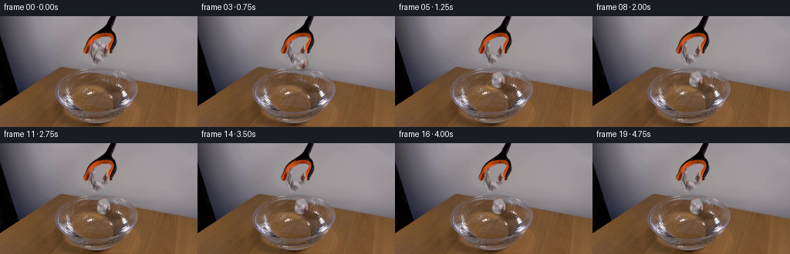
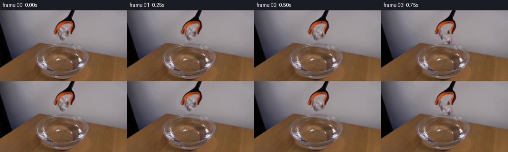
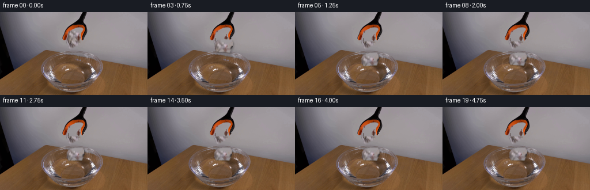
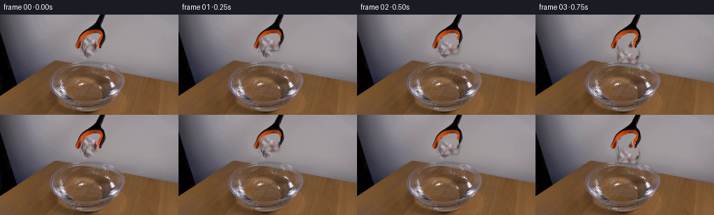
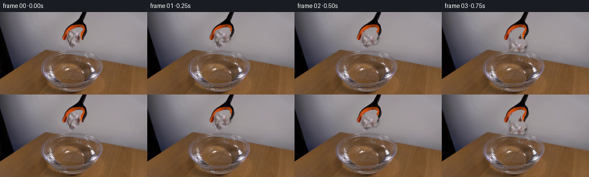

CODING AGENTS AS PIXEL WORLD MODELS
traex/DeepSeek-V4.1-Flash · 0135
点击播放 · 原生 RGB 像素
逐轮保存的候选
回放视频、检查图与代码变化。
每份候选均可单独播放。实际图片检查记录在下方工具轨迹中。
候选 01播放与检查图
点击播放 · 原生 RGB 像素


展开代码变化
--- 上一保存版本
+++ 本次保存版本
@@ -0,0 +1,186 @@
+from pathlib import Path
+
+import cv2
+import numpy as np
+from PIL import Image
+
+import artifact_io
+
+
+ROOT = Path(__file__).resolve().parent
+W, H = 256, 144
+N = 20
+
+
+def paper_alpha(roi_shape):
+ """Build an irregular, slightly soft silhouette for the crumpled paper."""
+ h, w = roi_shape
+ yy, xx = np.mgrid[:h, :w]
+ cx, cy = 10.4, 12.0
+ rx, ry = 9.1, 11.6
+ dx = (xx - cx) / rx
+ dy = (yy - cy) / ry
+ radius = np.sqrt(dx * dx + dy * dy)
+ angle = np.arctan2(dy, dx)
+ edge = 1.0 + 0.055 * np.sin(3.0 * angle + 0.8) + 0.035 * np.cos(5.0 * angle - 0.4)
+ alpha = np.clip((edge - radius) / 0.10, 0.0, 1.0).astype(np.float32)
+ alpha *= np.clip((xx + 0.6) / 1.4, 0.0, 1.0)
+ alpha *= np.clip((w - 0.6 - xx) / 1.4, 0.0, 1.0)
+ alpha *= np.clip((yy + 0.6) / 1.4, 0.0, 1.0)
+ alpha *= np.clip((h - 0.6 - yy) / 1.4, 0.0, 1.0)
+ return alpha
+
+
+def reconstruct_gripper_gap(frame, paper):
+ """Replace the held paper with matching wall texture while retaining the jaws."""
+ x0, y0 = paper["origin"]
+ h, w = paper["alpha"].shape
+ out = frame.astype(np.float32)
+
+ alpha = paper["alpha"]
+ fill_alpha = cv2.dilate((alpha > 0.08).astype(np.uint8), np.ones((3, 3), np.uint8))
+ fill_alpha = cv2.GaussianBlur(fill_alpha.astype(np.float32), (0, 0), 0.55)
+
+ roi = out[y0:y0 + h, x0:x0 + w]
+ rgb = roi.astype(np.int16)
+ r, g, b = rgb[..., 0], rgb[..., 1], rgb[..., 2]
+ value = rgb.max(axis=2)
+ sat = rgb.max(axis=2) - rgb.min(axis=2)
+ orange_or_dark = (((r > g * 1.16) & (r > b * 1.18) & (r > 52)) |
+ ((value < 52) & (sat < 35)))
+ fill_alpha *= (~orange_or_dark).astype(np.float32)
+
+ # A clean wall patch above the tool supplies fine grain without tool edges.
+ source = frame[2:2 + h, 80:80 + w].astype(np.float32)
+ low = cv2.GaussianBlur(source, (0, 0), 3.0)
+ texture = source - low
+
+ filled = np.empty_like(roi, dtype=np.float32)
+ for j in range(h):
+ y = y0 + j
+ left = np.median(frame[y, 92:108].astype(np.float32), axis=0)
+ right = np.median(frame[y, 151:166].astype(np.float32), axis=0)
+ u = np.linspace(0.0, 1.0, w, dtype=np.float32)[:, None]
+ base = left[None, :] * (1.0 - u) + right[None, :] * u
+ # Preserve the wall's low-frequency shading while replacing the local patch.
+ source_shift = np.mean(source[j], axis=0) - np.mean(low[j], axis=0)
+ filled[j] = base + texture[j] - 0.20 * source_shift
+
+ a = fill_alpha[..., None]
+ out[y0:y0 + h, x0:x0 + w] = roi * (1.0 - a) + filled * a
+ return np.clip(out, 0, 255).astype(np.uint8)
+
+
+def warp_paper(sprite_rgb, sprite_alpha, center, angle, sx=1.0, sy=1.0):
+ h, w = sprite_alpha.shape
+ m = cv2.getRotationMatrix2D((w * 0.5, h * 0.5), angle, 1.0)
+ m[0, 0] *= sx
+ m[0, 1] *= sx
+ m[1, 0] *= sy
+ m[1, 1] *= sy
+ m[0, 2] += center[0] - w * 0.5
+ m[1, 2] += center[1] - h * 0.5
+ rgb = cv2.warpAffine(sprite_rgb, m, (W, H), flags=cv2.INTER_LINEAR,
+ borderMode=cv2.BORDER_CONSTANT, borderValue=(0, 0, 0))
+ a = cv2.warpAffine(sprite_alpha, m, (W, H), flags=cv2.INTER_LINEAR,
+ borderMode=cv2.BORDER_CONSTANT, borderValue=0.0)
+ return rgb, np.clip(a, 0.0, 1.0)
+
+
+def water_ripple(frame, frame_index):
+ """Apply a shallow, radially decaying ripple inside the visible bowl."""
+ if frame_index < 4:
+ return frame.astype(np.float32)
+
+ t = (frame_index - 4) / 4.0
+ cx, cy = 127.0, 88.5
+ yy, xx = np.mgrid[:H, :W].astype(np.float32)
+ nx = (xx - cx) / 49.0
+ ny = (yy - cy) / 28.0
+ inside = 1.0 - (nx * nx + ny * ny)
+ mask = np.clip(inside / 0.13, 0.0, 1.0)
+ mask *= np.clip((yy - 63.0) / 8.0, 0.0, 1.0)
+
+ r = np.sqrt((xx - cx) ** 2 + ((yy - cy) * 1.55) ** 2)
+ front = 4.0 + 17.0 * t
+ envelope = np.exp(-((r - front) / 5.5) ** 2) * np.exp(-0.55 * t)
+ wave = np.sin((r - front) * 1.65)
+ displacement = 1.25 * envelope * wave * mask
+ ux = np.divide(xx - cx, r, out=np.zeros_like(r), where=r > 0.2)
+ uy = np.divide((yy - cy) * 1.55, r, out=np.zeros_like(r), where=r > 0.2)
+ map_x = (xx - ux * displacement).astype(np.float32)
+ map_y = (yy - uy * displacement).astype(np.float32)
+ warped = cv2.remap(frame, map_x, map_y, interpolation=cv2.INTER_LINEAR,
+ borderMode=cv2.BORDER_REFLECT_101)
+ out = frame.astype(np.float32) * (1.0 - mask[..., None]) + warped.astype(np.float32) * mask[..., None]
+
+ # A faint moving highlight makes the expanding rings legible at 4 fps.
+ ring = np.exp(-((r - front) / 1.15) ** 2) * np.exp(-0.72 * t) * mask
+ ring += 0.36 * np.exp(-((r - front * 0.58) / 1.35) ** 2) * np.exp(-0.9 * t) * mask
+ out += ring[..., None] * np.array([31.0, 28.0, 24.0], dtype=np.float32)
+ return np.clip(out, 0, 255)
+
+
+def paper_pose(frame_index):
+ """Center position, rotation, and squash for the falling/floating paper."""
+ base = np.array([131.5, 38.2], dtype=np.float32)
+ if frame_index == 1:
+ return base + [0.0, 1.4], 2.0, 1.00, 1.00
+ if frame_index == 2:
+ return base + [0.4, 7.2], 6.0, 1.00, 0.99
+ if frame_index == 3:
+ return base + [0.9, 20.5], -5.5, 1.02, 0.98
+ if frame_index == 4:
+ return np.array([132.5, 82.3]), 9.0, 1.07, 0.84
+
+ t = frame_index - 4
+ bob = 0.75 * np.exp(-0.24 * t) * np.sin(1.05 * t)
+ drift = 1.3 * (1.0 - np.exp(-0.20 * t))
+ angle = 9.0 * np.exp(-0.25 * t) * np.cos(0.82 * t) - 1.0
+ return np.array([132.5 + drift, 82.3 + bob]), angle, 1.02, 0.96
+
+
+def compose(frame, sprite_rgb, sprite_alpha, center, angle, sx, sy, frame_index):
+ out = water_ripple(frame, frame_index)
+ rgb, alpha = warp_paper(sprite_rgb, sprite_alpha, center, angle, sx, sy)
+
+ if frame_index >= 4:
+ # Refraction and a thin wet edge integrate the paper with the water.
+ lower = np.clip((np.arange(H, dtype=np.float32) - (center[1] - 1.0)) / 13.0, 0.0, 1.0)
+ tint = np.array([0.91, 0.96, 1.00], dtype=np.float32)
+ wet = alpha[..., None] * lower[:, None, None]
+ rgb_f = rgb.astype(np.float32)
+ rgb_f = rgb_f * (1.0 - wet) + rgb_f * tint * wet
+ rgb = np.clip(rgb_f, 0, 255).astype(np.uint8)
+
+ # Soft contact shadow, offset down-right to match the existing scene light.
+ shifted = np.roll(np.roll(alpha, 2, axis=0), 2, axis=1)
+ shadow = cv2.GaussianBlur(shifted, (0, 0), 1.35) * 0.20
+ out *= (1.0 - shadow[..., None])
+
+ a = alpha[..., None]
+ out = out * (1.0 - a) + rgb.astype(np.float32) * a
+ return np.clip(out, 0, 255).astype(np.uint8)
+
+
+def main():
+ first = np.asarray(Image.open(ROOT / "first_frame.png").convert("RGB"), dtype=np.uint8)
+ assert first.shape == (H, W, 3)
+
+ x0, y0 = 121, 26
+ alpha = paper_alpha((24, 20))
+ sprite_rgb = first[y0:y0 + 24, x0:x0 + 20].copy()
+ paper = {"origin": (x0, y0), "alpha": alpha}
+ empty_gripper = reconstruct_gripper_gap(first, paper)
+
+ frames = np.empty((N, H, W, 3), dtype=np.uint8)
+ frames[0] = first
+ for i in range(1, N):
+ center, angle, sx, sy = paper_pose(i)
+ frames[i] = compose(empty_gripper, sprite_rgb, alpha, center, angle, sx, sy, i)
+
+ artifact_io.save(frames, ROOT)
+
+
+if __name__ == "__main__":
+ main()
候选 02播放与检查图
点击播放 · 原生 RGB 像素


展开代码变化
--- 上一保存版本
+++ 本次保存版本
@@ -13,22 +13,17 @@
def paper_alpha(roi_shape):
- """Build an irregular, slightly soft silhouette for the crumpled paper."""
+ """Build a soft silhouette matching the crumpled payload inside the jaws."""
h, w = roi_shape
- yy, xx = np.mgrid[:h, :w]
- cx, cy = 10.4, 12.0
- rx, ry = 9.1, 11.6
- dx = (xx - cx) / rx
- dy = (yy - cy) / ry
- radius = np.sqrt(dx * dx + dy * dy)
- angle = np.arctan2(dy, dx)
- edge = 1.0 + 0.055 * np.sin(3.0 * angle + 0.8) + 0.035 * np.cos(5.0 * angle - 0.4)
- alpha = np.clip((edge - radius) / 0.10, 0.0, 1.0).astype(np.float32)
- alpha *= np.clip((xx + 0.6) / 1.4, 0.0, 1.0)
- alpha *= np.clip((w - 0.6 - xx) / 1.4, 0.0, 1.0)
- alpha *= np.clip((yy + 0.6) / 1.4, 0.0, 1.0)
- alpha *= np.clip((h - 0.6 - yy) / 1.4, 0.0, 1.0)
- return alpha
+ polygon = np.array([
+ [15.0, 1.2], [27.0, 1.4], [29.8, 5.0], [29.8, 12.0],
+ [27.0, 20.0], [26.0, 23.4], [3.0, 23.4], [1.0, 18.0],
+ [1.0, 10.0], [4.0, 4.0],
+ ], dtype=np.float32)
+ mask = np.zeros((h, w), dtype=np.uint8)
+ cv2.fillPoly(mask, [np.round(polygon).astype(np.int32)], 255)
+ alpha = cv2.GaussianBlur(mask.astype(np.float32) / 255.0, (0, 0), 0.55)
+ return np.clip(alpha, 0.0, 1.0)
def reconstruct_gripper_gap(frame, paper):
@@ -38,8 +33,8 @@
out = frame.astype(np.float32)
alpha = paper["alpha"]
- fill_alpha = cv2.dilate((alpha > 0.08).astype(np.uint8), np.ones((3, 3), np.uint8))
- fill_alpha = cv2.GaussianBlur(fill_alpha.astype(np.float32), (0, 0), 0.55)
+ fill_alpha = cv2.dilate((alpha > 0.04).astype(np.uint8), np.ones((3, 3), np.uint8))
+ fill_alpha = cv2.GaussianBlur(fill_alpha.astype(np.float32), (0, 0), 0.65)
roi = out[y0:y0 + h, x0:x0 + w]
rgb = roi.astype(np.int16)
@@ -64,7 +59,7 @@
base = left[None, :] * (1.0 - u) + right[None, :] * u
# Preserve the wall's low-frequency shading while replacing the local patch.
source_shift = np.mean(source[j], axis=0) - np.mean(low[j], axis=0)
- filled[j] = base + texture[j] - 0.20 * source_shift
+ filled[j] = base + 0.72 * texture[j] - 0.16 * source_shift
a = fill_alpha[..., None]
out[y0:y0 + h, x0:x0 + w] = roi * (1.0 - a) + filled * a
@@ -93,7 +88,7 @@
return frame.astype(np.float32)
t = (frame_index - 4) / 4.0
- cx, cy = 127.0, 88.5
+ cx, cy = 124.5, 88.5
yy, xx = np.mgrid[:H, :W].astype(np.float32)
nx = (xx - cx) / 49.0
ny = (yy - cy) / 28.0
@@ -121,9 +116,32 @@
return np.clip(out, 0, 255)
+def contact_splash(frame, frame_index):
+ """Small analytic droplets for the first two frames after water contact."""
+ if frame_index not in (4, 5, 6):
+ return frame
+ out = frame.astype(np.float32)
+ age = frame_index - 4
+ drops = [
+ (124.0, 75.5 - 4.0 * age, 1.00, 0.80),
+ (119.0, 78.0 - 5.5 * age, 0.75, 0.72),
+ (130.5, 75.0 - 3.0 * age, 0.85, 0.74),
+ (136.0, 78.0 - 4.5 * age, 0.65, 0.60),
+ (115.5, 82.0 - 2.0 * age, 0.55, 0.48),
+ (141.0, 82.0 - 2.5 * age, 0.48, 0.42),
+ ]
+ yy, xx = np.mgrid[:H, :W].astype(np.float32)
+ strength = 1.0 if frame_index == 4 else 0.62 if frame_index == 5 else 0.30
+ for cx, cy, rx, ry in drops:
+ q = ((xx - cx) / rx) ** 2 + ((yy - cy) / ry) ** 2
+ blob = np.exp(-3.2 * q) * strength
+ out += blob[..., None] * np.array([52.0, 60.0, 61.0], dtype=np.float32)
+ return np.clip(out, 0, 255)
+
+
def paper_pose(frame_index):
"""Center position, rotation, and squash for the falling/floating paper."""
- base = np.array([131.5, 38.2], dtype=np.float32)
+ base = np.array([131.0, 38.0], dtype=np.float32)
if frame_index == 1:
return base + [0.0, 1.4], 2.0, 1.00, 1.00
if frame_index == 2:
@@ -131,17 +149,17 @@
if frame_index == 3:
return base + [0.9, 20.5], -5.5, 1.02, 0.98
if frame_index == 4:
- return np.array([132.5, 82.3]), 9.0, 1.07, 0.84
+ return np.array([129.5, 82.0]), 9.0, 1.07, 0.84
t = frame_index - 4
bob = 0.75 * np.exp(-0.24 * t) * np.sin(1.05 * t)
drift = 1.3 * (1.0 - np.exp(-0.20 * t))
angle = 9.0 * np.exp(-0.25 * t) * np.cos(0.82 * t) - 1.0
- return np.array([132.5 + drift, 82.3 + bob]), angle, 1.02, 0.96
+ return np.array([129.5 + drift, 82.0 + bob]), angle, 1.02, 0.96
def compose(frame, sprite_rgb, sprite_alpha, center, angle, sx, sy, frame_index):
- out = water_ripple(frame, frame_index)
+ out = contact_splash(water_ripple(frame, frame_index), frame_index)
rgb, alpha = warp_paper(sprite_rgb, sprite_alpha, center, angle, sx, sy)
if frame_index >= 4:
@@ -167,9 +185,13 @@
first = np.asarray(Image.open(ROOT / "first_frame.png").convert("RGB"), dtype=np.uint8)
assert first.shape == (H, W, 3)
- x0, y0 = 121, 26
- alpha = paper_alpha((24, 20))
- sprite_rgb = first[y0:y0 + 24, x0:x0 + 20].copy()
+ x0, y0 = 116, 26
+ alpha = paper_alpha((25, 31))
+ sprite_rgb = first[y0:y0 + 25, x0:x0 + 31].copy()
+ r, g, b = sprite_rgb.transpose(2, 0, 1).astype(np.int16)
+ jaw = ((r > g * 1.28) & (r > b * 1.42)) | ((r + g + b) < 115)
+ jaw = cv2.dilate(jaw.astype(np.uint8), np.ones((2, 2), np.uint8)).astype(bool)
+ sprite_rgb = cv2.inpaint(sprite_rgb, jaw.astype(np.uint8) * 255, 2.2, cv2.INPAINT_TELEA)
paper = {"origin": (x0, y0), "alpha": alpha}
empty_gripper = reconstruct_gripper_gap(first, paper)
候选 03播放与检查图
点击播放 · 原生 RGB 像素

展开代码变化
--- 上一保存版本
+++ 本次保存版本
@@ -13,16 +13,16 @@
def paper_alpha(roi_shape):
- """Build a soft silhouette matching the crumpled payload inside the jaws."""
+ """Recover the crumpled paper from its residual over the neutral wall."""
h, w = roi_shape
polygon = np.array([
- [15.0, 1.2], [27.0, 1.4], [29.8, 5.0], [29.8, 12.0],
- [27.0, 20.0], [26.0, 23.4], [3.0, 23.4], [1.0, 18.0],
- [1.0, 10.0], [4.0, 4.0],
+ [15.0, 1.2], [25.0, 1.4], [29.0, 6.0], [29.6, 12.0],
+ [27.0, 19.5], [23.0, 23.2], [3.0, 23.2], [1.2, 18.0],
+ [1.0, 9.0], [4.0, 3.6],
], dtype=np.float32)
mask = np.zeros((h, w), dtype=np.uint8)
cv2.fillPoly(mask, [np.round(polygon).astype(np.int32)], 255)
- alpha = cv2.GaussianBlur(mask.astype(np.float32) / 255.0, (0, 0), 0.55)
+ alpha = cv2.GaussianBlur(mask.astype(np.float32) / 255.0, (0, 0), 0.48)
return np.clip(alpha, 0.0, 1.0)
可观测工具轨迹
实际执行的命令与返回图片。
命令 1exit 0
/bin/bash -c "pwd && rg --files -g '"'!*.mp4'"' -g '"'!*.mov'"' -g '"'!*.avi'"' | sort"
命令 2exit 0
/bin/bash -c 'cat prompt.txt'
命令 3exit 0
/bin/bash -c 'cat GENERATION_RULES.md'
命令 4exit 0
/bin/bash -c 'file first_frame.png && identify first_frame.png 2>/dev/null || true && ls -lah'
命令 5exit 0
/bin/bash -c 'cat artifact_io.py'
命令 6exit 0
/bin/bash -c 'cat player_template.html'
命令 7exit 0
/bin/bash -c "python - <<'PY'
from PIL import Image
import numpy as np
im=Image.open('first_frame.png').convert('RGB')
a=np.asarray(im)
print('size', im.size, 'shape', a.shape, 'dtype', a.dtype)
print('global min/max/mean', a.min(axis=(0,1)), a.max(axis=(0,1)), a.mean(axis=(0,1)))
print('corners', a[0,0], a[0,-1], a[-1,0], a[-1,-1])
# dominant quantized colors
q=(a//16)*16
u,c=np.unique(q.reshape(-1,3),axis=0,return_counts=True)
idx=np.argsort(c)[-25:][::-1]
for col,n in zip(u[idx],c[idx]): print(col.tolist(), int(n), round(n/a.shape[0]/a.shape[1]*100,1))
PY"命令 8exit 0
/bin/bash -c "python - <<'PY'
from PIL import Image
import numpy as np
im=np.asarray(Image.open('first_frame.png').convert('RGB')).astype(float)
h,w,_=im.shape
# 64x36 cell averages, labels by nearest palette
chars=' .:-=+*#%@'
g=im.mean(2)
# average cells 4x4
for y in range(0,h,4):
line=''
for x in range(0,w,4):
v=g[y:y+4,x:x+4].mean()
line+=chars[min(9,int(v/256*10))]
print(f'{y:03d} '+line)
PY"命令 9exit 0
/bin/bash -c "python - <<'PY'
import numpy as np
from PIL import Image
from scipy import ndimage
im=np.asarray(Image.open('first_frame.png').convert('RGB')).astype(int)
r,g,b=im.transpose(2,0,1)
masks={
'orange':(r>80)&(r>g*1.25)&(g>=b*.8)&(r>b*1.4),
'red':(r>70)&(r>g*1.5)&(r>b*1.7),
'dark':(r<60)&(g<60)&(b<60),
'bright':(r>180)&(g>175)&(b>165),
'blue':(b>r*1.1)&(b>g*1.05)&(b>45),
'cyan':(g>b*1.05)&(b>r*1.15)&(g>50),
'beige':(r>130)&(g>110)&(b<g*.9)&(r>g*1.05),
'graylight':(r>100)&(abs(r-g)<18)&(abs(g-b)<18),
}
for name,m in masks.items():
lab,n=ndimage.label(m)
sizes=ndimage.sum(m,lab,range(1,n+1))
inds=np.argsort(sizes)[-10:][::-1]
print('\\n',name,'total',m.sum())
for i in inds:
if sizes[i]<10: continue
ys,xs=np.where(lab==i+1)
print(' size',int(sizes[i]),'bbox',xs.min(),ys.min(),xs.max(),ys.max(),'cent',round(xs.mean(),1),round(ys.mean(),1),'color',np.round(im[ys,xs].mean(0),1))
PY"命令 10exit 0
/bin/bash -c "python - <<'PY'
from PIL import Image
import numpy as np
im=Image.open('first_frame.png').convert('RGB')
q=im.quantize(colors=16,method=Image.Quantize.MEDIANCUT,dither=Image.Dither.NONE)
a=np.asarray(im); p=np.asarray(q)
pal=q.getpalette()[:48]; pal=np.array(pal).reshape(16,3)
chars='0123456789abcdef'
print('PALETTE')
for i,c in enumerate(pal): print(chars[i],c.tolist(),int((p==i).sum()))
print('\\nCROP x=88..168 y=0..92, 2x2 cells, x labels every 10')
for y in range(0,92,2):
line=''
for x in range(88,168,2):
vals,cts=np.unique(p[y:y+2,x:x+2],return_counts=True)
line+=chars[vals[np.argmax(cts)]]
print(f'{y:02d} '+line)
PY"命令 11exit 0
/bin/bash -c "python - <<'PY'
from PIL import Image
import numpy as np, colorsys
im=np.asarray(Image.open('first_frame.png').convert('RGB')).astype(float)
# semantic per pixel categories using means in 2x2 cells
for y in range(0,96,2):
s=''
for x in range(80,176,2):
c=im[y:y+2,x:x+2].reshape(-1,3).mean(0); r,g,b=c
mx=max(c); mn=min(c); sat=(mx-mn)/(mx+1)
if mx<48: ch='@'
elif r>g*1.28 and g>=b*.92 and r>b*1.25: ch='O' if mx>105 else 'o'
elif r>g*1.15 and r>b*1.15: ch='B' if mx>100 else 'b'
elif sat<.10 and mx>185: ch='W'
elif sat<.12 and mx>145: ch='l'
elif sat<.16 and mx>105: ch='g'
elif sat<.18 and mx>65: ch='d'
elif mx<75: ch='.'
else: ch='?'
s+=ch
print(f'{y:02d} '+s)
PY"命令 12exit 0
/bin/bash -c "python - <<'PY'
from PIL import Image
import numpy as np
im=np.asarray(Image.open('first_frame.png').convert('RGB'))
# Print coordinates and RGB for key vertical/horizontal runs, and edge energy map
rgb=im.astype(float)
edge=np.sqrt(((np.gradient(rgb,axis=0))**2).sum(2)+((np.gradient(rgb,axis=1))**2).sum(2))
chars=' .:-=+*#%@'
for y in range(0,144,2):
s=''
for x in range(0,256,2):
v=edge[y:y+2,x:x+2].mean()
s+=chars[min(9,int(v/45*10))]
print(f'{y:03d} '+s)
PY"命令 13exit 0
/bin/bash -c "python - <<'PY' mods=['cv2','scipy','skimage','numpy','PIL'] for m in mods: try: mod=__import__(m); print(m,'ok',getattr(mod,'__version__','')) except Exception as e: print(m,'ERR',e) PY"
命令 14exit 0
/bin/bash -c "python - <<'PY'
from PIL import Image
import numpy as np
im=np.asarray(Image.open('first_frame.png').convert('RGB'))
# print RGB character per 1px for tool crop, x100-156 y15-65
# map to semantic chars manually based on hsv-ish values
for y in range(15,66):
s=''
for x in range(100,157):
r,g,b=im[y,x].astype(int)
mx=max(r,g,b); mn=min(r,g,b); sat=(mx-mn)/max(1,mx)
if mx<35: c='@'
elif r>g*1.5 and r>b*1.7: c='R'
elif r>g*1.2 and r>b*1.25: c='O'
elif mx>215 and sat<.12: c='W'
elif mx>180 and sat<.14: c='w'
elif mx>145 and sat<.16: c='l'
elif mx>115 and sat<.18: c='g'
elif mx>85 and sat<.22: c='d'
elif mx<70: c='.'
else: c='?'
s+=c
print(f'{y:03d} '+s)
print(' '+''.join(str((x//10)%10) for x in range(100,157)))
print(' '+''.join(str(x%10) for x in range(100,157)))
PY"命令 15exit 0
/bin/bash -c "python - <<'PY'
from PIL import Image
import numpy as np
im=np.asarray(Image.open('first_frame.png').convert('RGB'))
# inspect object area x65-180 y65-125 with RGB / gradients
for y in range(64,126,2):
s=''
for x in range(64,184,2):
c=im[y:y+2,x:x+2].reshape(-1,3).mean(0); r,g,b=c
# classify bowl glass vs paper vs water vs table
mx=max(c); mn=min(c); sat=(mx-mn)/max(1,mx)
if r>145 and g>130 and b>125 and abs(r-b)<25: ch='L'
elif r>125 and g>105 and b>95 and r>g*1.02: ch='l'
elif r>100 and g>80 and b<g*.95: ch='w'
elif r>75 and g>55 and b<g*.8: ch='t'
elif mx<55: ch='@'
else: ch='.'
s+=ch
print(f'{y:03d} '+s)
PY"命令 16exit 0
/bin/bash -c "python - <<'PY'
from PIL import Image
import numpy as np
im=np.asarray(Image.open('first_frame.png').convert('RGB'))
# list 5x5 cell mean colors as compact hex for area x64-184 y60-132
for y in range(60,132,4):
print(f'{y:03d}', end=' ')
for x in range(64,184,4):
c=im[y:y+4,x:x+4].reshape(-1,3).mean(0).astype(int)
# print coarse name based on RGB
r,g,b=c
if max(c)<40: ch='K'
elif max(c)<75: ch='k'
elif r>g*1.4 and r>b*1.5: ch='O'
elif r>g*1.2 and r>b*1.2: ch='R'
elif max(c)>205 and max(c)-min(c)<28: ch='W'
elif max(c)>170 and max(c)-min(c)<30: ch='w'
elif max(c)>140 and max(c)-min(c)<30: ch='l'
elif max(c)>110 and max(c)-min(c)<30: ch='g'
elif r>g*1.08 and g>b*1.1: ch='T'
elif b>r*1.08: ch='B'
else: ch='.'
print(ch,end='')
print()
print('legend K black k dark O orange R red W white w light l gray g darkgray T tan/brown B blue . other')
PY"命令 17exit 0
/bin/bash -c "python - <<'PY'
from PIL import Image
import numpy as np
im=np.asarray(Image.open('first_frame.png').convert('RGB')).astype(float)
# find local light-neutral blobs in bowl area. threshold high neutral relative to local brown
Y=im.mean(2); sat=im.max(2)-im.min(2)
# connected components on high luminance, neutral
m=(Y>135)&(sat<35)
# bowl ROI
roi=np.zeros(Y.shape,bool); roi[65:125,65:185]=1;m&=roi
import cv2
n,lab,stats,cents=cv2.connectedComponentsWithStats(m.astype('uint8'),8)
for i in sorted(range(1,n),key=lambda i:stats[i,4],reverse=True)[:30]:
x,y,w,h,area=stats[i]; print(area,(x,y,w,h),tuple(np.round(cents[i],1)),np.round(im[lab==i].mean(0),1))
PY"命令 18exit 0
/bin/bash -c "python - <<'PY'
from PIL import Image
import numpy as np
im=np.asarray(Image.open('first_frame.png').convert('RGB'))
# Inspect paper crop x76-106 y90-122 with one char per pixel: intensity normalized semantic
for y in range(88,124):
s=''
for x in range(74,110):
r,g,b=im[y,x].astype(int); Y=(r+g+b)/3; sat=max(r,g,b)-min(r,g,b)
if Y>195 and sat<35: ch='W'
elif Y>165 and sat<38: ch='w'
elif Y>140 and sat<40: ch='l'
elif Y>115 and sat<42: ch='g'
elif Y>90 and sat<48: ch='d'
elif r>g*1.08 and g>b*1.12: ch='t'
elif Y<65: ch='.'
else: ch='?'
s+=ch
print(f'{y:03d} '+s)
print(' '+''.join(str((x//10)%10) for x in range(74,110)))
print(' '+''.join(str(x%10) for x in range(74,110)))
PY"命令 19exit 0
/bin/bash -c "python - <<'PY'
from PIL import Image
import numpy as np
im=np.asarray(Image.open('first_frame.png').convert('RGB'))
# Bowl object structure by comparing to estimated table local background. show edges per 1px crop x70:180 y75:125
# use threshold on local edge, chars
import cv2
g=cv2.cvtColor(im,cv2.COLOR_RGB2GRAY).astype(float)
e=cv2.Sobel(g,cv2.CV_64F,1,1,ksize=3); e=np.abs(e)
for y in range(76,126):
s=''
for x in range(72,180):
v=e[y,x]
if v>170: ch='@'
elif v>100: ch='#'
elif v>60: ch='*'
elif v>30: ch='+'
elif v>15: ch='-'
else: ch=' '
s+=ch
print(f'{y:03d} '+s)
PY"命令 20exit 0
/bin/bash -c "python - <<'PY'
from PIL import Image
import numpy as np
im=np.asarray(Image.open('first_frame.png').convert('RGB'))
# Sample coordinates (x,y, RGB)
for y in [65,66,67,68,70,72,74,76,78,80,82,84,86,88,90,92,94,96,98,100,102,104,106,108,110,112,114,116,118,120,122,124,126,128,130,132,134,136,138,140]:
vals=[]
for x in [72,76,80,84,88,92,96,100,104,108,112,116,120,124,128,132,136,140,144,148,152,156,160,164,168,172,176]:
r,g,b=im[y,x]; Y=(int(r)+int(g)+int(b))//3
# print luminance 2digit compact
vals.append(f'{Y:03d}')
print(f'y={y:03d}', ' '.join(vals))
PY"命令 21exit 0
/bin/bash -c "python - <<'PY'
from PIL import Image
import numpy as np, cv2
im=np.asarray(Image.open('first_frame.png').convert('RGB'))
crop=im[18:58,100:158]
Z=crop.reshape(-1,3).astype(np.float32)
crit=(cv2.TERM_CRITERIA_EPS+cv2.TERM_CRITERIA_MAX_ITER,50,.2)
K=10
_,lab,cent=cv2.kmeans(Z,K,None,crit,10,cv2.KMEANS_PP_CENTERS)
cent=cent.astype(int); counts=np.bincount(lab.ravel(),minlength=K)
# sort by count
order=np.argsort(counts)[::-1]
for i in order: print(i,counts[i],cent[i], 'hsv', cv2.cvtColor(np.uint8([[cent[i]]]),cv2.COLOR_RGB2HSV)[0,0].tolist())
# map to chars sorted by luminance
idx_to_char={int(i):chr(65+j) for j,i in enumerate(order)}
for yy in range(0,40,1):
s=''
for xx in range(0,58,1): s+=idx_to_char[int(lab.reshape(40,58)[yy,xx])]
print(f'{18+yy:02d} '+s)
PY"命令 22exit 0
/bin/bash -c "python - <<'PY'
import cv2, numpy as np
from PIL import Image
im=np.asarray(Image.open('first_frame.png').convert('RGB'))
g=cv2.cvtColor(im,cv2.COLOR_RGB2GRAY)
# Hough lines bowl roi
roi=g[65:125,65:185]
e=cv2.Canny(roi,35,100)
lines=cv2.HoughLinesP(e,1,np.pi/180,threshold=10,minLineLength=6,maxLineGap=3)
print('lines',None if lines is None else len(lines))
if lines is not None:
for l in sorted(lines[:,0].tolist(),key=lambda z:-((z[2]-z[0])**2+(z[3]-z[1])**2))[:50]: print(tuple(v+(65 if i%2==0 else 65) for i,v in enumerate(l)))
PY"命令 23exit 0
/bin/bash -c "python - <<'PY'
from PIL import Image
import numpy as np, cv2
im=np.asarray(Image.open('first_frame.png').convert('RGB'))
hsv=cv2.cvtColor(im,cv2.COLOR_RGB2HSV)
for y in range(20,52):
s=''
for x in range(112,152):
r,g,b=im[y,x]; H,S,V=hsv[y,x]
if S<25: c='N'
elif S<50: c='n'
elif r>g*1.4 and r>b*1.5: c='O'
elif V<45: c='@'
elif V<80: c='d'
elif V<120: c='g'
else: c='l'
s+=c
print(f'{y:02d} '+s)
print(' '+''.join(str((x//10)%10) for x in range(112,152)))
print(' '+''.join(str(x%10) for x in range(112,152)))
PY"命令 24exit 0
/bin/bash -c "python - <<'PY'
from PIL import Image
import numpy as np
im=np.asarray(Image.open('first_frame.png').convert('RGB'))
# x/y projections of dark + orange in tool zone
r,g,b=im.transpose(2,0,1).astype(float)
dark=(r<55)&(g<55)&(b<55)
orange=(r>80)&(r>g*1.35)&(r>b*1.6)
for name,m in [('dark',dark),('orange',orange)]:
print(name)
for y in range(0,70,2):
xs=np.where(m[y:y+2].any(0))[0]
if len(xs): print(y, xs.min(),xs.max(),len(xs), 'runs',[(a[0],a[-1]) for a in np.split(xs,np.where(np.diff(xs)>1)[0]+1) if len(a)>1])
PY"命令 25exit 0
/bin/bash -c "python - <<'PY'
from PIL import Image
import numpy as np
im=np.asarray(Image.open('first_frame.png').convert('RGB')).astype(float)
# detect glass edge using intensity difference from smooth base approximated via bilateral/median
import cv2
g=cv2.cvtColor(im.astype('uint8'),cv2.COLOR_RGB2GRAY).astype(float)
base=cv2.medianBlur(g.astype('uint8'),15).astype(float)
d=g-base
for y in range(68,126):
s=''
for x in range(72,180):
v=d[y,x]
if v>40: ch='#'
elif v>22: ch='*'
elif v>10: ch='+'
elif v<-35: ch='@'
elif v<-20: ch='O'
elif v<-8: ch='o'
else: ch=' '
s+=ch
print(f'{y:03d} '+s)
PY"命令 26exit 0
/bin/bash -c "python - <<'PY'
from PIL import Image
import numpy as np
im=np.asarray(Image.open('first_frame.png').convert('RGB'))
# check patches exact stats and colors around bowl edges
patches={'paper':(80,98,100,116),'bowl_left':(72,91,91,122),'bowl_right':(158,92,176,118),'bowl_top':(94,65,151,80),'water_center':(100,84,145,101),'table':(100,130,150,143),'tool':(112,22,148,48)}
for n,(x0,y0,x1,y1) in patches.items():
a=im[y0:y1,x0:x1].reshape(-1,3)
print(n,'mean',np.round(a.mean(0),1),'std',np.round(a.std(0),1),'min',a.min(0),'max',a.max(0))
PY"命令 27exit 0
/bin/bash -c "python - <<'PY'
from PIL import Image
import numpy as np, cv2
im=np.asarray(Image.open('first_frame.png').convert('RGB'))
hsv=cv2.cvtColor(im,cv2.COLOR_RGB2HSV)
for y in range(20,51):
s=''
for x in range(112,152):
r,g,b=map(int,im[y,x]); H,S,V=map(int,hsv[y,x])
if S<25: c='N'
elif S<50: c='n'
elif r>g*1.4 and r>b*1.5: c='O'
elif V<45: c='@'
elif V<80: c='d'
elif V<120: c='g'
else: c='l'
s+=c
# runs
runs=[]; st=0
for i in range(1,len(s)+1):
if i==len(s) or s[i]"'!=s[st]:
runs.append(f'"'{s[st]}:{112+st}-{111+i}')
st=i
print(f'{y:02d}', ' '.join(runs))
PY"命令 28exit 0
/bin/bash -c "python - <<'PY'
from PIL import Image
import numpy as np, cv2
im=np.asarray(Image.open('first_frame.png').convert('RGB'))
hsv=cv2.cvtColor(im,cv2.COLOR_RGB2HSV)
for y in range(72,124,2):
s=''
for x in range(72,180,2):
c=im[y:y+2,x:x+2].reshape(-1,3).mean(0); r,g,b=c
# choose object outlines based on local chroma; use rgb ratio
if r>g*1.2 and r>b*1.35 and r>90: c='O'
elif b>g*1.03 and b>r*1.05 and b>75: c='B'
elif r>g*1.05 and g>b*1.1 and r>100: c='T'
elif max(c)<45: c='@'
elif max(c)<70: c='d'
elif max(c)<100: c='g'
elif max(c)<135: c='l'
elif max(c)<175: c='w'
else: c='W'
s+=c
print(f'{y:03d} '+s)
PY"命令 29exit 0
/bin/bash -c "python - <<'PY'
from PIL import Image
import numpy as np
im=np.asarray(Image.open('first_frame.png').convert('RGB'))
# Find likely paper mask by local saturation and brightness in crop, inspect connected regions.
r,g,b=im.transpose(2,0,3).astype(float) if False else im.transpose(2,0,1).astype(float)
mx=im.max(2); mn=im.min(2); sat=mx-mn; Y=im.mean(2)
roi=np.zeros(Y.shape,bool);roi[88:124,74:112]=1
# white/neutral paper pixels, show at multiple thresholds
for th in [115,125,135,145,155,165,175]:
m=roi&(Y>th)&(sat<35)
print('threshold',th,'count',m.sum())
# print binary high neutral in crop
for y in range(88,124):
s=''
for x in range(72,114):
m=(Y[y,x]>120 and sat[y,x]<35)
s+='#' if m else ' '
print(f'{y:03d} '+s)
PY"命令 30exit 0
/bin/bash -c "python - <<'PY'
import cv2,numpy as np
from PIL import Image
im=np.asarray(Image.open('first_frame.png').convert('RGB'))
# candidate bowl contours from Canny on smoothed image
for blur in [3,5,7]:
g=cv2.cvtColor(cv2.GaussianBlur(im,(blur,blur),0),cv2.COLOR_RGB2GRAY)
e=cv2.Canny(g,25,80)
# Hough circle
circles=cv2.HoughCircles(g,cv2.HOUGH_GRADIENT,dp=1,minDist=30,param1=60,param2=15,minRadius=25,maxRadius=70)
print('blur',blur,'circles',None if circles is None else np.round(circles[0],1).tolist())
# print low-res gradient orientation maybe find boundary
PY"命令 31exit 0
/bin/bash -c "python generate.py && python - <<'PY'
from PIL import Image
import numpy as np
f=np.asarray(Image.open('first_frame.png').convert('RGB'))
a=np.asarray(Image.open('frames/00.png').convert('RGB'))
print('frame0 identical:',np.array_equal(f,a), 'shape',a.shape)
for i in range(20):
x=np.asarray(Image.open(f'frames/{i:02d}.png'))
print(i, 'mean', np.round(x.mean((0,1)),1), 'changed from prev', int((x"'!=np.asarray(Image.open(f'"'frames/{max(0,i-1):02d}.png'))).any(2).sum()))
PY"命令 32exit 0
/bin/bash -c "python - <<'PY'
from PIL import Image
import numpy as np
im=np.asarray(Image.open('first_frame.png').convert('RGB'))
# print RGB for interior x=122..143, y=28..49 on 4px cells as color letters and luminance digits
for y in range(28,50):
vals=[]
for x in range(122,144):
r,g,b=map(int,im[y,x]); mx=max(r,g,b); mn=min(r,g,b); s=mx-mn
if r>g*1.35 and r>b*1.6: ch='O'
elif mx<50: ch='K'
elif s<16 and mx>170: ch='W'
elif s<18 and mx>140: ch='w'
elif s<24 and mx>115: ch='l'
elif s<28 and mx>85: ch='g'
elif r>g*1.06 and g>b*1.08: ch='t'
else: ch='.'
vals.append(ch)
print(f'{y:02d} '+''.join(vals))
print(' '+''.join(str((x//10)%10) for x in range(122,144)))
print(' '+''.join(str(x%10) for x in range(122,144)))
PY"命令 33exit 0
/bin/bash -c "python - <<'PY'
from PIL import Image
import numpy as np
im=np.asarray(Image.open('first_frame.png').convert('RGB'))
for y in range(20,52):
s=''
for x in range(108,154):
r,g,b=map(int,im[y,x]); mx=max(r,g,b);mn=min(r,g,b);sat=mx-mn
if r>g*1.35 and r>b*1.6: c='O'
elif mx<45: c='K'
elif sat<20 and mx>150: c='W'
elif sat<24 and mx>120: c='l'
elif sat<30 and mx>85: c='g'
else: c='.'
s+=c
print(f'{y:02d} '+s)
PY"命令 34exit 0
/bin/bash -c "python - <<'PY'
from PIL import Image
import numpy as np
im=np.asarray(Image.open('first_frame.png').convert('RGB'))
# Search for most uniform vertical wall columns in x 80..180, y 2..20 and candidate fill patches for paper crop.
for y0 in [0,2,4,8]:
for x0 in [80,90,100,120,145,160,170]:
a=im[y0:y0+24,x0:x0+20].astype(float)
print((x0,y0),'mean',np.round(a.mean((0,1)),1),'std',round(a.std(),1))
print()
PY"命令 35exit 0
/bin/bash -c "python - <<'PY'
from PIL import Image
import numpy as np
im=np.asarray(Image.open('first_frame.png').convert('RGB'))
# Actual background at interior varies smoothly. Analyze horizontal column medians for y 25..50 outside tool.
for y in range(24,52,2):
vals=[]
for x in [85,90,95,100,105,110,115,152,155,160,165,170,175,180]:
vals.append(int(im[y,x].mean()))
print(y,vals)
PY"命令 36exit 0
/bin/bash -c "python - <<'PY'
from PIL import Image
import numpy as np
im=np.asarray(Image.open('first_frame.png').convert('RGB'))
# Check 5x5 grid of paper crop, compare to neighbors. We want only neutral high pixels, not gray wall.
# paper mask via neutral + brightness; jaw orange filtered. Use connected component seeded center.
r,g,b=im.transpose(2,0,1).astype(int)
mx=im.max(2).astype(int); mn=im.min(2).astype(int); sat=mx-mn; Y=im.mean(2)
for th in [110,120,130,140,150,160]:
m=(Y>th)&(sat<32)
# only inside crop
print(th, 'count',m[27:50,122:144].sum())
# print candidate paper mask chars with sat threshold 38 brightness 112
for y in range(26,51):
s=''
for x in range(120,146):
if Y[y,x]>115 and sat[y,x]<38: c='#'
elif r[y,x]>g[y,x]*1.3 and r[y,x]>b[y,x]*1.5: c='O'
elif mx[y,x]<50: c='K'
else: c=' '
s+=c
print(f'{y:02d} '+s)
PY"命令 37exit 0
/bin/bash -c "python - <<'PY'
from PIL import Image
import numpy as np
im=np.asarray(Image.open('first_frame.png').convert('RGB')).astype(int)
Y=im.mean(2); sat=im.max(2)-im.min(2)
# semantic high sat paper probably near neutral. print bbox by y of rows # count in crop
for y in range(20,52):
xs=np.where((Y[y,118:148]>112)&(sat[y,118:148]<40))[0]+118
print(y, (xs.min(),xs.max(),len(xs)) if len(xs) else None)
PY"命令 38exit 0
/bin/bash -c "python - <<'PY'
from PIL import Image
import numpy as np
im=np.asarray(Image.open('first_frame.png').convert('RGB'))
# x range x=110..150; display all brightness values on coarser 2x2 with paper # but save crop upscaled maybe available visually? We can inspect numeric ASCII with actual chars.
# Print max-min saturation values 2px grid in tool gap.
Y=im.mean(2);sat=im.max(2)-im.min(2)
for y in range(24,52,2):
s=''
for x in range(112,150,2):
yy=Y[y:y+2,x:x+2].mean(); ss=sat[y:y+2,x:x+2].mean()
if yy<50: c='K'
elif ss>60 and yy<130: c='O'
elif ss<20 and yy>145: c='W'
elif ss<27 and yy>120: c='w'
elif ss<35 and yy>100: c='g'
else: c='.'
s+=c
print(f'{y:02d} '+s)
PY"命令 39exit 0
/bin/bash -c "python - <<'PY'
from PIL import Image
import numpy as np
im=np.asarray(Image.open('first_frame.png').convert('RGB'))
# crop actual values as hex blocks no. Print RGB triplets for gap center x126..142 every 4 y 28..48.
for y in range(27,51):
print(y, ' '.join(f'{x}:{im[y,x,0]:03d},{im[y,x,1]:03d},{im[y,x,2]:03d}' for x in range(124,144,4)))
PY"命令 40exit 0
/bin/bash -c "python - <<'PY'
from PIL import Image
import numpy as np
im=np.asarray(Image.open('first_frame.png').convert('RGB')).astype(int)
# derive wall background by interpolating from clean strips x=100..115 and x=152..170, but see row.
for y in range(27,51):
left=np.median(im[y,98:116],axis=0); right=np.median(im[y,153:171],axis=0)
print(y, 'L',left.astype(int), 'R',right.astype(int))
PY"命令 41exit 0
/bin/bash -c "python - <<'PY'
from PIL import Image
import numpy as np
im=np.asarray(Image.open('first_frame.png').convert('RGB'))
# Compare exact center pixels x132..140 y27..48 to see paper texture, output luminance matrix 1 char per pixel (quantized)
Y=im.mean(2)
for y in range(26,50):
s=''
for x in range(120,146):
v=Y[y,x]
chars=' .:-=+*#%@'
s+=chars[min(9,int(v/256*10))]
print(f'{y:02d} '+s)
PY"命令 42exit 0
/bin/bash -c "python - <<'PY'
from PIL import Image
import numpy as np, cv2
im=np.asarray(Image.open('first_frame.png').convert('RGB')).astype(float)
# estimate smooth wall from clean left strip and right strip per row
H,W,_=im.shape
left=np.median(im[:,90:112],axis=1)
right=np.median(im[:,153:174],axis=1)
for y in range(20,58):
s=''
for x in range(112,154):
u=(x-101)/(153-101)
base=left[y]*(1-u)+right[y]*u
d=im[y,x].mean()-base.mean()
if d>25:c='@'
elif d>15:c='#'
elif d>7:c='*'
elif d>3:c='+'
elif d<-35:c='X'
elif d<-18:c='O'
elif d<-8:c='o'
elif d<-3:c='.'
else:c=' '
s+=c
print(f'{y:02d} '+s)
print(' '+''.join(str((x//10)%10) for x in range(112,154)))
print(' '+''.join(str(x%10) for x in range(112,154)))
PY"命令 43exit 0
/bin/bash -c "python - <<'PY'
import generate, numpy as np
from PIL import Image
first=np.asarray(Image.open('first_frame.png').convert('RGB'))
alpha=generate.paper_alpha((24,20))
paper={'origin':(121,26),'alpha':alpha}
empty=generate.reconstruct_gripper_gap(first,paper)
d=np.abs(empty.astype(int)-first.astype(int))
ys,xs=np.where(d.max(2)>0)
print('diff count',len(xs),'bbox',xs.min(),ys.min(),xs.max(),ys.max(),'max',d.max())
print('alpha bbox',np.where(alpha>.01)[1].min()+121,np.where(alpha>.01)[0].min()+26,np.where(alpha>.01)[1].max()+121,np.where(alpha>.01)[0].max()+26)
Image.fromarray(empty).save('.tmp/empty.png')
# stats original vs empty in area
for y in range(27,50):
print(y, 'orig',np.round(first[y,121:141].mean(0),1),'empty',np.round(empty[y,121:141].mean(0),1),'diff',int(d[y,121:141].mean()))
PY"命令 44exit 0
/bin/bash -c "python - <<'PY'
from PIL import Image
import numpy as np
for fi in [0,1,2,3,4,5,8,12,16,19]:
a=np.asarray(Image.open(f'frames/{fi:02d}.png').convert('RGB')).astype(float)
Y=a.mean(2)
print('\\nFRAME',fi)
for y in range(20,94,2):
s=''
for x in range(96,168,2):
v=Y[y:y+2,x:x+2].mean()
chars=' .:-=+*#%@'
s+=chars[min(9,int(v/256*10))]
print(f'{y:02d} '+s)
PY"命令 45exit 0
/bin/bash -c "python - <<'PY'
from PIL import Image
import numpy as np
# compare frame1 to frame0 in tool area; determine held object changes expected
for i in range(1,6):
a=np.asarray(Image.open(f'frames/{i:02d}.png').convert('RGB'))
b=np.asarray(Image.open('frames/00.png').convert('RGB'))
d=np.abs(a.astype(int)-b.astype(int)).max(2)
print(i,'tool diff',int((d[20:55,110:155]>0).sum()),'mean',round(float(d[20:55,110:155].mean()),2),'bbox',np.where(d>0)[1].min(),np.where(d>0)[0].min(),np.where(d>0)[1].max(),np.where(d>0)[0].max())
PY"命令 46exit 0
/bin/bash -c "python - <<'PY'
from PIL import Image
import numpy as np
# frame1-4 diff maps in tool region at pixel resolution
for fi in [1,2,3,4]:
a=np.asarray(Image.open(f'frames/{fi:02d}.png').convert('RGB')).astype(int)
b=np.asarray(Image.open('frames/00.png').convert('RGB')).astype(int)
d=np.abs(a-b).max(2)
print('\\nF',fi)
for y in range(20,82,2):
s=''
for x in range(108,158):
v=d[y:y+2,x].max()
if v>80:c='@'
elif v>40:c='#'
elif v>15:c='*'
elif v>3:c='+'
elif v>0:c='.'
else:c=' '
s+=c
print(f'{y:02d} '+s)
PY"命令 47exit 0
/bin/bash -c "python - <<'PY'
from PIL import Image
import numpy as np
im=np.asarray(Image.open('first_frame.png').convert('RGB'))
# print mean in interior x122:144 rows, compare to row background approx. Analyze paper likely starts y27. Saturation paper ~5, background ~5 too.
for y in range(25,51):
a=im[y,122:144].astype(float)
print(y,'mean',np.round(a.mean(0),1),'std',round(a.mean(1).std(),1),'minmax',int(a.mean(1).min()),int(a.mean(1).max()))
PY"命令 48exit 0
/bin/bash -c "python - <<'PY'
from PIL import Image
import numpy as np
im=np.asarray(Image.open('first_frame.png').convert('RGB'))
# nearest-neighbor upscale of crop to .tmp/crop.png (view unavailable but inspection asset); perhaps OCR impossible.
crop=Image.fromarray(im[20:55,105:160]).resize((550,350),Image.Resampling.NEAREST)
crop.save('.tmp/tool_crop.png')
# print saturation and brightness 1px as chars centered
Y=im.mean(2); sat=im.max(2)-im.min(2)
for y in range(25,52):
s=''
for x in range(118,148):
v=Y[y,x]; sa=sat[y,x]
if v<45:c='@'
elif sa>55 and v<130:c='O'
elif sa<12 and v>150:c='W'
elif sa<18 and v>130:c='w'
elif sa<28 and v>108:c='g'
elif sa<35 and v>80:c='d'
else:c='.'
s+=c
print(f'{y:02d} '+s)
PY"命令 49exit 0
/bin/bash -c "python - <<'PY'
import generate,numpy as np
from PIL import Image
im=np.asarray(Image.open('first_frame.png').convert('RGB')).astype(int)
a=generate.paper_alpha((24,20)); x0,y0=121,26
for j in range(24):
s=''
for i in range(20):
aa=a[j,i]; r,g,b=im[y0+j,x0+i]
if aa>.5:
if r>g*1.25 and r>b*1.35: c='O'
elif max(r,g,b)<55:c='K'
elif max(r,g,b)-min(r,g,b)<20 and max(r,g,b)>145:c='W'
elif max(r,g,b)-min(r,g,b)<28 and max(r,g,b)>115:c='w'
else:c='g'
elif aa>.05:c='+'
else:c=' '
s+=c
print(f'{y0+j:02d} '+s)
PY"命令 50exit 0
/bin/bash -c "python - <<'PY'
from PIL import Image
import numpy as np
im=np.asarray(Image.open('first_frame.png').convert('RGB')).astype(int)
# Find per row gap bounds where background high neutral enclosed by orange. For y 27-50, show runs of neutral bright.
Y=im.mean(2);sat=im.max(2)-im.min(2)
for y in range(25,52):
m=(Y[y,110:155]>105)&(sat[y,110:155]<42)
xs=np.where(m)[0]+110
print(y, [(int(a[0]),int(a[-1])) for a in np.split(xs,np.where(np.diff(xs)>1)[0]+1) if len(a)>1])
PY"命令 51exit 0
/bin/bash -c "python - <<'PY'
from PIL import Image
import numpy as np
im=np.asarray(Image.open('first_frame.png').convert('RGB')).astype(int)
# Estimate background behind tool via clean pixels y0-25 same x; calculate vertical drift by comparing rows near y27.
for x in range(118,150,2):
top=np.median(im[0:15,x],axis=0)
mid=np.median(im[20:24,x],axis=0) # often tool
print(x,top.astype(int),im[27,x],im[35,x],im[45,x])
PY"命令 52exit 0
/bin/bash -c "python - <<'PY'
from PIL import Image
import numpy as np
im=np.asarray(Image.open('first_frame.png').convert('RGB')).astype(int)
# Print background values at x=132..139 every row, and hue/sat; identify paper vs wall
for y in range(24,52):
print(f'{y:02d}', ' '.join(f'{im[y,x,0]:3d}/{im[y,x,1]:3d}/{im[y,x,2]:3d}' for x in range(132,140)))
PY"命令 53exit 0
/bin/bash -c "python - <<'PY'
from PIL import Image
import numpy as np
im=np.asarray(Image.open('first_frame.png').convert('RGB')).astype(int)
# Determine high neutral component contours in paper region with saturation threshold and cv2 contours
Y=im.mean(2); sat=im.max(2)-im.min(2)
m=((Y>112)&(sat<43)).astype('uint8')
roi=np.zeros_like(m);roi[26:51,118:146]=m[26:51,118:146]
import cv2
n,lab,stats,cents=cv2.connectedComponentsWithStats(roi,8)
for i in range(1,n):
x,y,w,h,area=stats[i];
if area>20: print(i,area,(x,y,w,h),np.round(cents[i],1))
PY"命令 54exit 0
/bin/bash -c "python - <<'PY'
from PIL import Image
import numpy as np
im=np.asarray(Image.open('first_frame.png').convert('RGB'))
# Save relevant candidates as images for later possible visual? Use textual values.
# Find paper centroid/bbox from neutral blob excluding wall columns by threshold relative to x-range between jaws.
Y=im.mean(2);sat=im.max(2)-im.min(2)
# mask component above
import cv2
m=((Y>112)&(sat<43)).astype('uint8')
roi=np.zeros_like(m);roi[26:51,118:146]=m[26:51,118:146]
n,lab,stats,cents=cv2.connectedComponentsWithStats(roi,8)
i=1+np.argmax(stats[1:,4]); mask=(lab==i)
ys,xs=np.where(mask)
print('component',stats[i], 'cent',cents[i], 'range',xs.min(),xs.max(),ys.min(),ys.max())
for y in range(27,50):
s=''
for x in range(118,146):
s+='#' if mask[y,x] else ' '
print(f'{y:02d} '+s)
PY"命令 55exit 0
/bin/bash -c "python - <<'PY'
from PIL import Image
import numpy as np
im=np.asarray(Image.open('first_frame.png').convert('RGB')).astype(float)
# find paper blob robustly using known gap polygon: rows x bounds. classify deviations from interpolated wall
left=np.median(im[:,95:115],axis=1); right=np.median(im[:,151:171],axis=1)
rows={27:(130,142),28:(128,144),29:(126,144),30:(125,144),31:(123,144),32:(122,143),33:(121,142),34:(121,142),35:(121,141),36:(118,140),37:(118,140),38:(118,140),39:(118,140),40:(118,140),41:(118,140),42:(118,140),43:(118,140),44:(118,140),45:(118,140),46:(118,141),47:(118,142),48:(118,143),49:(118,144),50:(118,145)}
for y in range(27,51):
a,b=rows[y]; x=np.arange(a,b+1); u=(x-105)/(151-105)
base=left[y]*(1-u[:,None])+right[y]*u[:,None]
d=im[y,x]-base
print(y, 'mean diff',np.round(d.mean(0),1),'lum',np.round(d.mean(1),1).mean(), 'maxlum',np.round(d.mean(1),1).max())
PY"命令 56exit 0
/bin/bash -c "python - <<'PY'
from PIL import Image
import numpy as np, cv2
im=np.asarray(Image.open('first_frame.png').convert('RGB'))
# kmeans 12 on full tool crop and map, sort clusters by luminance
crop=im[18:52,108:154]
Z=crop.reshape(-1,3).astype(np.float32)
crit=(cv2.TERM_CRITERIA_EPS+cv2.TERM_CRITERIA_MAX_ITER,100,.1)
K=12
_,labels,cent=cv2.kmeans(Z,K,None,crit,20,cv2.KMEANS_PP_CENTERS)
counts=np.bincount(labels.ravel(),minlength=K)
order=np.argsort(cent.mean(1))
print([(int(i),int(counts[i]),np.round(cent[i]).astype(int).tolist()) for i in order])
char='0123456789AB'
mp={int(i):char[j] for j,i in enumerate(order)}
for y in range(34):
print(f'{18+y:02d} '+''.join(mp[int(labels.reshape(34,46)[y,x])] for x in range(46)))
PY"命令 57exit 0
/bin/bash -c "python - <<'PY'
from PIL import Image
import numpy as np
im=np.asarray(Image.open('first_frame.png').convert('RGB'))
# Kmeans centers list index meaning; inspect x 118-146 y27-50 exact nearest centers names.
# use print of luminance + hue to visually identify paper object. Use values map with digits representing quantized luminance every 16.
Y=im.mean(2)
for y in range(26,52):
print(f'{y:02d} '+''.join('0123456789ABCDEF'[min(15,int(Y[y,x]//16))] for x in range(114,151)))
PY"命令 58exit 0
/bin/bash -c "python - <<'PY'
from PIL import Image
import numpy as np, cv2
im=np.asarray(Image.open('first_frame.png').convert('RGB')).astype(float)
# Fit smooth wall color per row by interpolating medians from clean left/right strips.
left=np.median(im[:,90:115],axis=1); right=np.median(im[:,151:171],axis=1)
# print residual maps in gap using base interpolation from x=102 to 151.
for y in range(20,55):
s=''
for x in range(112,153):
u=(x-102)/(151-102)
base=left[y]*(1-u)+right[y]*u
d=im[y,x]-base
# signed luminance residual, orange if chroma shifted
v=d.mean(); chroma=d.max()-d.min()
r,g,b=im[y,x]
if r>g*1.25 and r>b*1.35: c='O'
elif max(r,g,b)<50:c='K'
elif v>28:c='@'
elif v>16:c='#'
elif v>8:c='*'
elif v>4:c='+'
elif v<-28:c='X'
elif v<-16:c='x'
elif v<-8:c='o'
elif v<-4:c='.'
else:c=' '
s+=c
print(f'{y:02d} '+s)
print(' '+''.join(str((x//10)%10) for x in range(112,153)))
print(' '+''.join(str(x%10) for x in range(112,153)))
PY"命令 59exit 0
/bin/bash -c "python - <<'PY'
from PIL import Image
import numpy as np
im=np.asarray(Image.open('first_frame.png').convert('RGB')).astype(float)
left=np.median(im[:,90:115],axis=1); right=np.median(im[:,151:171],axis=1)
# signed residual 1px x128..146 y30..51
for y in range(28,52):
vals=[]
for x in range(128,146):
u=(x-102)/(151-102);base=left[y]*(1-u)+right[y]*u
vals.append(int(round((im[y,x]-base).mean())))
print(f'{y:02d}', ' '.join(f'{v:4d}' for v in vals))
PY"命令 60exit 0
/bin/bash -c "python - <<'PY'
from PIL import Image
import numpy as np
im=np.asarray(Image.open('first_frame.png').convert('RGB'))
# Search for likely exact object mask via color clustering and compare region to row medians.
# Print luminance residual but combine positive and negative with chars, focus y32-49 x118-141.
a=im.astype(float); left=np.median(a[:,90:115],axis=1);right=np.median(a[:,151:171],axis=1)
for y in range(26,51):
s=''
for x in range(116,144):
u=(x-102)/(151-102);base=left[y]*(1-u)+right[y]*u;d=(a[y,x]-base).mean()
if d>20:c='@'
elif d>10:c='#'
elif d>4:c='+'
elif d<-80:c='X'
elif d<-35:c='x'
elif d<-15:c='o'
elif d<-4:c='.'
else:c=' '
s+=c
print(f'{y:02d} '+s)
PY"命令 61exit 0
/bin/bash -c "python - <<'PY'
from PIL import Image
import numpy as np
im=np.asarray(Image.open('first_frame.png').convert('RGB')).astype(float)
# check row means after clipping to background base for potential paper boundary
for y in range(27,50):
a=im[y,120:145]
print(y, np.round(a.mean(0),1), 'med',np.median(a,axis=0).astype(int))
PY"命令 62exit 0
/bin/bash -c "python - <<'PY'
from PIL import Image
import numpy as np
im=np.asarray(Image.open('first_frame.png').convert('RGB')).astype(int)
# inspect paper row x132..139 around bottom to see folds
for y in range(30,49):
print(y, ' '.join(f'{im[y,x].mean():.0f}' for x in range(120,144)))
PY"命令 63exit 0
/bin/bash -c "python - <<'PY'
from PIL import Image
import numpy as np
im=np.asarray(Image.open('first_frame.png').convert('RGB')).astype(float)
# The paper is bright neutral blob x118..144 y27..49. Find contiguous rows of low saturation and brightness.
Y=im.mean(2);sat=im.max(2)-im.min(2)
for y in range(24,53):
m=(Y[y,115:150]>100)&(sat[y,115:150]<40)
xs=np.where(m)[0]+115
print(y, 'count',len(xs),'minmax', (xs.min(),xs.max()) if len(xs) else None)
PY"命令 64exit 0
/bin/bash -c "python - <<'PY'
from PIL import Image
import numpy as np
im=np.asarray(Image.open('first_frame.png').convert('RGB')).astype(float)
# Compare gap to wall estimated via each row at x 105 and 153: need paper high brightness blob. show gap mask excluding jaw as image-like
Y=im.mean(2);sat=im.max(2)-im.min(2)
for y in range(20,56):
s=''
for x in range(108,156):
r,g,b=im[y,x]; m=(Y[y,x]>125 and sat[y,x]<32)
if r>g*1.3 and r>b*1.5:c='O'
elif max(r,g,b)<50:c='K'
elif m:c='#'
elif Y[y,x]>145 and sat[y,x]<40:c='+'
else:c=' '
s+=c
print(f'{y:02d} '+s)
PY"命令 65exit 0
/bin/bash -c "python - <<'PY'
from PIL import Image
import numpy as np, cv2
im=np.asarray(Image.open('first_frame.png').convert('RGB'))
# Try inpaint paper area based on a hand-defined polygon, then compare. This will show whether wall reconstruction can be simple.
mask=np.zeros((144,256),np.uint8)
poly=np.array([[131,26],[144,27],[146,42],[141,48],[119,49],[117,43],[121,32]],np.int32)
cv2.fillPoly(mask,[poly],255)
# but preserve jaw sides: mask only inside x 118..143 and orange not included
r,g,b=im.transpose(2,0,1).astype(int)
orange=(r>g*1.3)&(r>b*1.5)
mask[orange]=0
out=cv2.inpaint(im,mask,5,cv2.INPAINT_TELEA)
Image.fromarray(out).save('.tmp/inpaint.png')
for y in range(25,52):
print(y,'orig',np.round(im[y,120:145].mean(0),1),'inp',np.round(out[y,120:145].mean(0),1))
PY"命令 66exit 0
/bin/bash -c "python - <<'PY'
from PIL import Image
import numpy as np
im=np.asarray(Image.open('first_frame.png').convert('RGB')).astype(float)
# Look at x=132 row y=27..49 vs background x=132 y=0..20
print('top x132')
for y in range(0,27): print(y,im[y,132].astype(int).tolist(),round(im[y,132].mean(),1))
PY"命令 67exit 0
/bin/bash -c "python - <<'PY'
from PIL import Image
import numpy as np
im=np.asarray(Image.open('first_frame.png').convert('RGB')).astype(int)
# Print actual brightness and saturation of x132..139, y33..49 with relation to expected wall; need see paper contour.
Y=im.mean(2);S=im.max(2)-im.min(2)
for y in range(27,50):
print(f'{y:02d}', ' '.join(f'{int(Y[y,x]):3d}/{int(S[y,x]):2d}' for x in range(120,145)))
PY"命令 68exit 0
/bin/bash -c "python - <<'PY'
from PIL import Image
import numpy as np
im=np.asarray(Image.open('first_frame.png').convert('RGB')).astype(int)
# Determine wall column x=140 vs x=132 at y rows; it looks same. print exact diff d and expected paper locations from mask visual.
for y in range(27,50):
print(y, [(x,int(im[y,x].mean()),int(im[y,x].max()-im[y,x].min())) for x in [118,120,122,124,126,128,130,132,134,136,138,140,142,144]])
PY"命令 69exit 0
/bin/bash -c "python - <<'PY'
from PIL import Image
import numpy as np
im=np.asarray(Image.open('first_frame.png').convert('RGB')).astype(int)
# get smooth expected background using x=100..116 and x=150..170 per row, robust interpolation. print row residual with all channels.
L=np.median(im[:,100:116],axis=1); R=np.median(im[:,150:170],axis=1)
for y in range(27,51):
print(f'{y:02d}', end=' ')
for x in range(126,143):
u=(x-108)/(150-108); b=L[y]*(1-u)+R[y]*u; d=im[y,x]-b
# output compact RGB residual sign values every?
print(f'{d.mean():4.0f}',end=' ')
print()
PY"命令 70exit 0
/bin/bash -c "python - <<'PY'
from PIL import Image
import numpy as np
im=np.asarray(Image.open('first_frame.png').convert('RGB')).astype(float)
# use first 14 rows to map wall brightness at same x, smooth vertical color drift via global diff from y=10.
for x in range(120,148,2):
top=np.median(im[4:14,x],axis=0)
print(x,top.astype(int), 'y27',im[27,x].astype(int),'y35',im[35,x].astype(int),'y45',im[45,x].astype(int))
PY"命令 71exit 0
/bin/bash -c "python - <<'PY'
from PIL import Image
import numpy as np
im=np.asarray(Image.open('first_frame.png').convert('RGB')).astype(int)
# In paper interior, compute high residual against wall per row and bbox; maybe wall is uniform except paper, identify paper as high/low deviations.
L=np.median(im[:,90:112],axis=1);R=np.median(im[:,151:170],axis=1)
for y in range(26,51):
u=(np.arange(116,146)-101)/(151-101)
base=L[y][None,:]*(1-u[:,None])+R[y][None,:]*u[:,None]
d=np.abs(im[y,116:146]-base).mean(1)
print(y, ''.join('#' if v>20 else '+' if v>8 else '.' if v>3 else ' ' for v in d))
PY"命令 72exit 0
/bin/bash -c "python generate.py && python - <<'PY'
from PIL import Image
import numpy as np
f=np.asarray(Image.open('first_frame.png').convert('RGB'))
a=np.asarray(Image.open('frames/00.png').convert('RGB'))
print('frame0 identical:',np.array_equal(f,a))
# examine sprite mask coverage and orange pixels after inpaint
import generate
rgb=Image.open('frames/04.png')
# motion statistics
prev=f
for i in range(1,20):
x=np.asarray(Image.open(f'frames/{i:02d}.png').convert('RGB'))
d=np.abs(x.astype(int)-prev.astype(int)).max(2)
ys,xs=np.where(d>0)
print(f'{i:02d} changed={len(xs):4d} bbox={xs.min():3d},{ys.min():3d}-{xs.max():3d},{ys.max():3d} maxdiff={d.max():3d}')
prev=x
PY"命令 73exit 0
/bin/bash -c "python - <<'PY'
from PIL import Image
import numpy as np, generate, cv2
first=np.asarray(Image.open('first_frame.png').convert('RGB'))
x0,y0=116,26; alpha=generate.paper_alpha((25,31)); sprite=first[y0:y0+25,x0:x0+31].copy()
r,g,b=sprite.transpose(2,0,1).astype(np.int16); jaw=((r>g*1.28)&(r>b*1.42))|((r+g+b)<115); jaw=cv2.dilate(jaw.astype(np.uint8),np.ones((2,2),np.uint8)).astype(bool)
sprite=cv2.inpaint(sprite,jaw.astype(np.uint8)*255,2.2,cv2.INPAINT_TELEA)
# Count original orange/dark pixels remaining in alpha
Y=sprite.mean(2); sat=sprite.max(2)-sprite.min(2)
print('alpha coverage',int((alpha>.05).sum()),'alpha bbox',np.where(alpha>.05)[1].min()+x0,np.where(alpha>.05)[0].min()+y0,np.where(alpha>.05)[1].max()+x0,np.where(alpha>.05)[0].max()+y0)
for y in range(25):
s=''
for x in range(31):
if alpha[y,x]<.05: c=' '
elif jaw[y,x]: c='J'
else:
rr,gg,bb=sprite[y,x]
if rr>gg*1.25 and rr>bb*1.4:c='O'
elif max(rr,gg,bb)<60:c='K'
elif max(rr,gg,bb)-min(rr,gg,bb)<20 and max(rr,gg,bb)>155:c='W'
elif max(rr,gg,bb)-min(rr,gg,bb)<30 and max(rr,gg,bb)>110:c='w'
else:c='g'
s+=c
print(f'{y0+y:02d} '+s)
PY"命令 74exit 0
/bin/bash -c "python - <<'PY'
import generate,numpy as np
from PIL import Image
im=np.asarray(Image.open('first_frame.png').convert('RGB'))
a=generate.paper_alpha((25,31)); x0,y0=116,26
# original semantic alpha coverage classification (before inpaint)
r,g,b=im.transpose(2,0,1).astype(int); orange=(r>g*1.3)&(r>b*1.5); dark=(im.max(2)<50)
for y in range(25):
s=''
for x in range(31):
if a[y,x]<.05:c=' '
elif orange[y0+y,x0+x]:c='O'
elif dark[y0+y,x0+x]:c='K'
elif (im[y0+y,x0+x].max()-im[y0+y,x0+x].min())<25 and im[y0+y,x0+x].mean()>115:c='W'
else:c='.'
s+=c
print(f'{y0+y:02d} '+s)
print('orange in alpha',int((orange[y0:y0+25,x0:x0+31]&(a>.05)).sum()),'dark',int((dark[y0:y0+25,x0:x0+31]&(a>.05)).sum()))
PY"命令 75exit 0
/bin/bash -c "python - <<'PY'
from PIL import Image
import numpy as np, cv2
im=np.asarray(Image.open('first_frame.png').convert('RGB')).astype(float)
# raw crop residual using wall estimate to show paper actual shape at x112-150 y24-52
L=np.median(im[:,95:113],axis=1);R=np.median(im[:,150:169],axis=1)
for y in range(24,52):
s=''
for x in range(108,154):
u=(x-101)/(150-101);base=L[y]*(1-u)+R[y]*u;d=(im[y,x]-base).mean()
r,g,b=im[y,x]
if r>g*1.25 and r>b*1.35:c='O'
elif max(r,g,b)<48:c='K'
elif d>12:c='#'
elif d>4:c='+'
elif d>-4:c=' '
elif d>-15:c='.'
else:c='x'
s+=c
print(f'{y:02d} '+s)
print(' '+''.join(str((x//10)%10) for x in range(108,154)))
print(' '+''.join(str(x%10) for x in range(108,154)))
PY"命令 76exit 0
/bin/bash -c "python - <<'PY'
from PIL import Image
import numpy as np
im=np.asarray(Image.open('first_frame.png').convert('RGB')).astype(int)
# Crop around paper and print brightness matrix at 1 px with chars to locate contour. Use local y range.
Y=im.mean(2)
chars=' .:-=+*#%@'
for y in range(25,53):
s=''
for x in range(108,154):
s+=chars[min(9,int(Y[y,x]/26))]
print(f'{y:02d} '+s)
PY"命令 77exit 0
/bin/bash -c "python - <<'PY'
import numpy as np
from PIL import Image
im=np.asarray(Image.open('first_frame.png').convert('RGB')).astype(float)
# Analyze paper object by comparing each pixel to the same wall at rows above: background is likely nearly uniform, but wall appears at 155. object seems exactly x 131..140? Let's inspect Y values 27-48 at x=132..141.
for y in range(26,51):
print(f'{y:02d}', ' '.join(f'{im[y,x].mean():5.1f}' for x in range(130,143)))
PY"命令 78exit 0
/bin/bash -c "python - <<'PY'
import numpy as np
from PIL import Image
im=np.asarray(Image.open('first_frame.png').convert('RGB')).astype(float)
# Find where jaw colors are; infer paper silhouette actually only center x132..139 y27..48? Examine color patterns 2D at x128..144 y26..50
for y in range(25,51):
s=''
for x in range(126,146):
r,g,b=im[y,x]; Y=(r+g+b)/3; S=max(r,g,b)-min(r,g,b)
# use W for wall gray (155), p for lighter/paper, d darker
if r>g*1.3 and r>b*1.5:c='O'
elif Y<45:c='K'
elif S<15 and Y>170:c='P'
elif S<15 and Y>145:c='W'
elif S<20 and Y>120:c='l'
elif S<30 and Y>90:c='g'
elif S<35 and Y>60:c='d'
else:c='.'
s+=c
print(f'{y:02d} '+s)
PY"命令 79exit 0
/bin/bash -c "python - <<'PY'
from PIL import Image
import numpy as np
im=np.asarray(Image.open('first_frame.png').convert('RGB')).astype(float)
# print crop as very simple 2x2 average with characters for luminance
Y=im.mean(2)
for y in range(22,56,2):
s=''
for x in range(108,154,2):
v=Y[y:y+2,x:x+2].mean()
c=' .:-=+*#%@'[min(9,int(v/26))]
s+=c
print(f'{y:02d} '+s)
PY"命令 80exit 0
/bin/bash -c "python - <<'PY'
from PIL import Image
import numpy as np
im=np.asarray(Image.open('first_frame.png').convert('RGB')).astype(float)
Y=im.mean(2)
# quantize y 0..144 wall background at x=132; compare expected wall vs observed.
# Since wall color by y from x=100 outside tool, print per y medians at x=95..105, x=132, x=165
for y in range(20,58):
vals=[np.median(Y[y,90:110]),Y[y,132],np.median(Y[y,155:175])]
print(y,*(f'{v:5.1f}' for v in vals))
PY"命令 81exit 0
/bin/bash -c "python - <<'PY'
from PIL import Image
import numpy as np
im=np.asarray(Image.open('first_frame.png').convert('RGB')).astype(int)
# map manually classify paper (P) based on neutral gray deviation from 154 plus dark folds; print 1px x130-141 y27-49
for y in range(26,50):
s=''
for x in range(128,144):
r,g,b=im[y,x];Y=(r+g+b)/3;S=max(r,g,b)-min(r,g,b)
if S<30 and Y>160:c='P'
elif S<30 and Y>135:c='w'
elif S<32 and Y>105:c='g'
elif S<40 and Y>75:c='d'
else:c='.'
s+=c
print(f'{y:02d} '+s)
PY"命令 82exit 0
/bin/bash -c "python - <<'PY'
from PIL import Image
import numpy as np
im=np.asarray(Image.open('first_frame.png').convert('RGB')).astype(int)
# Save downscaled crop via nearest and also use sixel? no. compute image labels using fixed wall background difference.
# Locate paper: wall expected luminance 154, neutral. Actual paper has neutral but deviations. calculate color distance to wall [158,151,154]
wall=np.array([158,151,154])
for y in range(24,52):
s=''
for x in range(114,150):
c=im[y,x];d=np.linalg.norm(c-wall)
# orange and dark known jaws; paper likely d moderate; wall d small
r,g,b=c
if r>g*1.25 and r>b*1.35:c='O'
elif max(c)<50:c='K'
elif d<10:c=' '
elif d<25:c='.'
elif d<45:c='+'
elif d<70:c='*'
else:c='#'
s+=c
print(f'{y:02d} '+s)
PY"命令 83exit 0
/bin/bash -c "python - <<'PY'
from PIL import Image
import numpy as np
im=np.asarray(Image.open('first_frame.png').convert('RGB')).astype(float)
# Compute color distance to nearest of wall/tool palette, inspect interior map only x125-142 y27-49.
wall=np.array([158,151,154]); dark=np.array([20,18,19]); orange=np.array([170,72,20])
for y in range(26,51):
s=''
for x in range(124,144):
c=im[y,x]
# labels by nearest key
ds=[np.linalg.norm(c-p) for p in [wall,dark,orange]]
if ds[2]<60:c='O'
elif ds[1]<35:c='K'
elif ds[0]<10:c='W'
elif ds[0]<25:c='w'
elif ds[0]<50:c='g'
else:c='.'
s+=c
print(f'{y:02d} '+s)
PY"命令 84exit 0
/bin/bash -c "python - <<'PY'
from PIL import Image
import numpy as np
im=np.asarray(Image.open('first_frame.png').convert('RGB')).astype(int)
# extract RGB map for paper interior at x132..141 y27..49; show hue/sat/lum
for y in range(27,50):
print(f'{y:02d}', [im[y,x].tolist() for x in range(132,142)])
PY"命令 85exit 0
/bin/bash -c "python - <<'PY'
from PIL import Image
import numpy as np
im=np.asarray(Image.open('first_frame.png').convert('RGB')).astype(float)
# manual gap bounds based on orange jaw rows. Extract paper component only within x 119..141 and y 27..50.
# Print whether each pixel differs from wall using absolute color residual and show mask.
L=np.median(im[:,100:118],axis=1); R=np.median(im[:,150:171],axis=1)
x0,x1=119,142;y0,y1=26,51
for y in range(y0,y1):
s=''
for x in range(x0,x1):
u=(x-108)/(150-108);base=L[y]*(1-u)+R[y]*u
d=np.abs(im[y,x]-base).mean()
r,g,b=im[y,x]
if r>g*1.3 and r>b*1.5:c='O'
elif max(r,g,b)<55:c='K'
elif d>25:c='#'
elif d>10:c='+'
elif d>5:c='.'
else:c=' '
s+=c
print(f'{y:02d} '+s)
PY"命令 86exit 0
/bin/bash -c "python - <<'PY'
from PIL import Image
import numpy as np
im=np.asarray(Image.open('first_frame.png').convert('RGB')).astype(int)
# Determine paper extent by reading color; wall is [157,151,153], paper changes. For each row, find x where color not wall in central gap.
wall=np.array([158,151,154]); xr=range(118,143)
for y in range(27,50):
ds=[np.linalg.norm(im[y,x]-wall) for x in xr]
print(y, ''.join(' ' if d<6 else '.' if d<12 else '+' if d<22 else '#' if d<45 else '@' for d in ds))
PY"命令 87exit 0
/bin/bash -c "python - <<'PY'
import numpy as np
from PIL import Image
im=np.asarray(Image.open('first_frame.png').convert('RGB')).astype(float)
# estimate wall background more accurately as local Gaussian interpolation from boundaries using cv2 inpaint of all central region
import cv2
mask=np.zeros((144,256),np.uint8); mask[27:51,121:142]=255
# remove orange/dark from mask
r,g,b=im.transpose(2,0,1); orange=(r>g*1.25)&(r>b*1.4); dark=im.max(2)<55
mask[(orange|dark)]=0
out=cv2.inpaint(im.astype('uint8'),mask,3,cv2.INPAINT_NS).astype(float)
for y in range(27,51):
d=(im[y]-out[y]).mean(1)
print(y, ''.join(' ' if abs(v)<3 else '.' if v<8 else '+' if v<16 else '#' if v<30 else '@' for v in d[118:143]))
PY"命令 88exit 0
/bin/bash -c "python - <<'PY'
from PIL import Image
import numpy as np
im=np.asarray(Image.open('first_frame.png').convert('RGB')).astype(int)
# Let's identify wall-only pixels in gap by high saturation <10 and compare luminance around 154.
# paper likely central 132-140 y27-48. Get actual image crop perhaps can render ANSI truecolor? Terminal output hidden visually, not useful.
# Instead print all pixel colors sampled 4x4 mean across tool.
for y in range(24,52,2):
print(y,[im[y:y+2,x:x+2].reshape(-1,3).mean(0).astype(int).tolist() for x in range(118,144,4)])
PY"命令 89exit 0
/bin/bash -c "python - <<'PY'
from PIL import Image
import numpy as np
im=np.asarray(Image.open('first_frame.png').convert('RGB')).astype(int)
# paper candidate mask based on saturation<25 and brightness, show pixel 2D with x 125..145 y26..51
Y=im.mean(2);S=im.max(2)-im.min(2)
for y in range(25,52):
s=''
for x in range(125,146):
r,g,b=im[y,x]
# object vs wall: wall around 157,151,153. Look for shifts > 8
d=np.abs(im[y,x]-np.array([157,151,153])).mean()
if r>g*1.3 and r>b*1.5:c='O'
elif Y[y,x]<50:c='K'
elif d>20:c='#'
elif d>10:c='+'
elif d>5:c='.'
else:c=' '
s+=c
print(f'{y:02d} '+s)
PY"命令 90exit 0
/bin/bash -c "python - <<'PY'
from PIL import Image
import numpy as np
im=np.asarray(Image.open('first_frame.png').convert('RGB')).astype(float)
# Estimate background at gap using inpaint of only paper region but inspect values.
import cv2
mask=np.zeros((144,256),np.uint8); mask[27:50,122:142]=255
# exclude jaws
r,g,b=im.transpose(2,0,1); mask[(r>g*1.3)&(r>b*1.45)]=0
bg=cv2.inpaint(im.astype('uint8'),mask,3,cv2.INPAINT_TELEA)
# compare per pixel color deviation
for y in range(27,50):
s=''
for x in range(118,145):
d=np.linalg.norm(im[y,x]-bg[y,x])
if d>70:c='@'
elif d>45:c='#'
elif d>25:c='*'
elif d>12:c='+'
elif d>6:c='.'
else:c=' '
s+=c
print(f'{y:02d} '+s)
PY"命令 91exit 0
/bin/bash -c "python - <<'PY'
import cv2,numpy as np
from PIL import Image
im=np.asarray(Image.open('first_frame.png').convert('RGB'))
# Erode/dilate connected paper mask maybe use GrabCut in ROI with seed center paper and boundary bg.
# Print mask from color residual but use connected components; focus result
Y=im.mean(2);S=im.max(2)-im.min(2)
base=np.array([157,151,153]); d=np.linalg.norm(im.astype(float)-base,axis=2)
# paper residual: central mask x120:144 y27:50, brightness >120, saturation <45, deviation >5
m=np.zeros(Y.shape,np.uint8); roi=(np.indices(Y.shape)[1]>=118)&(np.indices(Y.shape)[1]<=143)&(np.indices(Y.shape)[0]>=27)&(np.indices(Y.shape)[0]<=50)
m[roi & (d>7)&(Y>90)&(S<45)]=255
m=cv2.morphologyEx(m,cv2.MORPH_CLOSE,np.ones((3,3),np.uint8))
n,lab,stats,cents=cv2.connectedComponentsWithStats(m,8)
for i in range(1,n):
if stats[i,4]>30: print(i,stats[i].tolist(),cents[i].round(1).tolist())
PY"命令 92exit 0
/bin/bash -c "python - <<'PY'
import numpy as np,cv2
from PIL import Image
im=np.asarray(Image.open('first_frame.png').convert('RGB'))
Y=im.mean(2);S=im.max(2)-im.min(2);base=np.array([157,151,153]);d=np.linalg.norm(im.astype(float)-base,axis=2)
yy,xx=np.indices(Y.shape);roi=(xx>=118)&(xx<=143)&(yy>=27)&(yy<=50)
m=np.zeros(Y.shape,np.uint8);m[roi&(d>7)&(Y>90)&(S<45)]=255
n,lab,stats,cents=cv2.connectedComponentsWithStats(m,8);idx=1+np.argmax(stats[1:,4]);mask=lab==idx
for y in range(27,51):
print(f'{y:02d} '+''.join('#' if mask[y,x] else ' ' for x in range(116,145)))
PY"命令 93exit 0
/bin/bash -c "python - <<'PY'
import numpy as np,cv2
from PIL import Image
im=np.asarray(Image.open('first_frame.png').convert('RGB'))
Y=im.mean(2);S=im.max(2)-im.min(2);base=np.array([157,151,153]);d=np.linalg.norm(im.astype(float)-base,axis=2)
yy,xx=np.indices(Y.shape);roi=(xx>=118)&(xx<=143)&(yy>=27)&(yy<=50)
# direct central paper likely all d>5; print 1px d values threshold
m=np.zeros(Y.shape,np.uint8);m[roi&(d>10)&(Y>90)&(S<45)]=255
n,lab,stats,cents=cv2.connectedComponentsWithStats(m,8);idx=1+np.argmax(stats[1:,4]);mask=lab==idx
print('component',stats[idx])
for y in range(27,51):
print(f'{y:02d} '+''.join('#' if mask[y,x] else ' ' for x in range(116,145)))
PY"命令 94exit 1
/bin/bash -c "python - <<'PY'
import numpy as np,cv2
from PIL import Image
im=np.asarray(Image.open('first_frame.png').convert('RGB')).astype(float)
# center paper mask test with local distance to wall reference. Count contiguous neutral-ish area.
Y=im.mean(2);S=im.max(2)-im.min(2)
for y in range(27,51):
s=''
for x in range(116,146):
r,g,b=im[y,x]
# wall base [157,151,153]; paper appears white deviations.
d=np.linalg.norm(im[y,x]-np.array([157,151,153]))
if r>g*1.3 and r>b*1.5:c='O'
elif Y[y,x]<60:c='K'
elif d>8 and S<35 and Y>100:c='#'
else:c=' '
s+=c
print(f'{y:02d} '+s)
PY"命令 95exit 0
/bin/bash -c "python - <<'PY'
import numpy as np,cv2
from PIL import Image
im=np.asarray(Image.open('first_frame.png').convert('RGB')).astype(float)
Y=im.mean(2);S=im.max(2)-im.min(2);base=np.array([157.,151.,153.])
for y in range(27,51):
s=''
for x in range(116,146):
r,g,b=im[y,x];d=np.linalg.norm(im[y,x]-base)
if r>g*1.3 and r>b*1.5:c='O'
elif Y[y,x]<60:c='K'
elif d>8 and S[y,x]<35 and Y[y,x]>100:c='#'
else:c=' '
s+=c
print(f'{y:02d} '+s)
PY"命令 96exit 0
/bin/bash -c "python - <<'PY'
from PIL import Image
import numpy as np
im=np.asarray(Image.open('first_frame.png').convert('RGB')).astype(float)
Y=im.mean(2);S=im.max(2)-im.min(2)
# Background wall around y 27-50 is nearly constant x 132-140 = 154. Paper changes in y 33-48. First 6 rows y27-32 are likely actual white paper, not wall? x edges jaw shape says yes.
# check paper region height 25 px, width 23. We can use entire gap.
# print color distance to wall for full gap, identify which side is paper vs wall by direct known boundary x120..143.
for y in range(27,51):
print(f'{y:02d}', ''.join('#' if np.linalg.norm(im[y,x]-np.array([157,151,153]))>6 and S[y,x]<40 and Y[y,x]>90 else ' ' for x in range(116,146)))
PY"命令 97exit 0
/bin/bash -c "python - <<'PY'
from PIL import Image
import numpy as np
im=np.asarray(Image.open('first_frame.png').convert('RGB')).astype(int)
# Print local row x=115..150 quantized hue categories, now label wall 157/151/153 as blank, paper neutral deviations #
# use exact equal to wall threshold
for y in range(27,51):
s=''
for x in range(115,151):
c=im[y,x];Y=c.mean();S=c.max()-c.min();r,g,b=c
if r>g*1.3 and r>b*1.5:c='O'
elif Y<50:c='K'
elif abs(c[0]-157)<5 and abs(c[1]-151)<5 and abs(c[2]-153)<5:c=' '
elif Y>100 and S<45:c='#'
else:c='.'
s+=c
print(f'{y:02d} '+s)
PY"命令 98exit 0
/bin/bash -c "python - <<'PY'
from PIL import Image
import numpy as np
im=np.asarray(Image.open('first_frame.png').convert('RGB')).astype(float)
Y=im.mean(2);S=im.max(2)-im.min(2)
# Print numeric distances to wall baseline for x 132-141 y27-50; maybe see paper as small deviations only at y33+
base=np.array([157,151,153])
for y in range(27,51):
print(f'{y:02d}', ' '.join(f'{np.linalg.norm(im[y,x]-base):4.0f}' for x in range(130,143)))
PY"命令 99exit 0
/bin/bash -c "python - <<'PY'
from PIL import Image
import numpy as np
im=np.asarray(Image.open('first_frame.png').convert('RGB')).astype(float)
# use known wall background from same y at x=132? impossible. compute image gradients reveals paper folds. Maybe object is 132..140 y27..48 exactly based on \"white\" fill.
# Compare central paper to adjacent wall at x=128 and x=142; print x positions where brightness differs >10 from wall median around 154
for y in range(27,51):
vals=im[y,128:143].mean(1)
print(y, ''.join('#' if abs(v-154)>10 else '+' if abs(v-154)>4 else ' ' for v in vals))
PY"命令 100exit 0
/bin/bash -c "python - <<'PY'
import numpy as np, generate
from PIL import Image
# test render paper at a fixed position, save crops, inspect alpha/pixel stats
rgb=np.asarray(Image.open('first_frame.png').convert('RGB'))
x0,y0=116,26;a=generate.paper_alpha((25,31));sprite=rgb[y0:y0+25,x0:x0+31].copy()
import cv2
r,g,b=sprite.transpose(2,0,1).astype(np.int16);jaw=((r>g*1.28)&(r>b*1.42))|((r+g+b)<115);jaw=cv2.dilate(jaw.astype(np.uint8),np.ones((2,2),np.uint8)).astype(bool)
sprite=cv2.inpaint(sprite,jaw.astype(np.uint8)*255,2.2,cv2.INPAINT_TELEA)
# actual object if alpha should cover only central paper. render on black with alpha
out=np.zeros_like(rgb); roi=out[y0:y0+25,x0:x0+31];aa=a[...,None];roi[:]=sprite*aa
Image.fromarray(out).save('.tmp/sprite.png')
# calculate pixels opaque and saturation stats
m=a>.5;print('coverage',m.sum(),'mean rgb',np.round(sprite[m].mean(0),1),'std',np.round(sprite[m].std(0),1))
# likely image object only x 132..140 y27..49, which corresponds local 16..24 x 1..23
# print sprite local mean rows in alpha
for j in range(25): print(j+y0, int((a[j]>.05).sum()), np.round(sprite[j][a[j]>.05].mean(0),1) if (a[j]>.05).any() else '-')
PY"命令 101exit 0
/bin/bash -c "python - <<'PY'
from PIL import Image
import numpy as np
im=np.asarray(Image.open('first_frame.png').convert('RGB')).astype(int)
# Find actual object mask maybe paper not white"'! Prompt says crumpled piece of paper; could be gray crumple x 132..139 y33..49 with dark creases. Let'"'s inspect by color similarity to paper reference.
# print color at x132..140 y35..49 labels as hex
for y in range(30,50):
print(y,' '.join('%02x%02x%02x'%tuple(im[y,x]) for x in range(130,142)))
PY"命令 102exit 0
/bin/bash -c "python generate.py && python - <<'PY'
from PIL import Image
import numpy as np
for i in [0,1,2,3,4,5,8,12,19]:
a=np.asarray(Image.open(f'frames/{i:02d}.png').convert('RGB')).astype(float)
Y=a.mean(2)
print('\\nFRAME',i)
for y in range(22,108,3):
s=''
for x in range(90,178,2):
v=Y[y:y+3,x:x+2].mean(); s+=' .:-=+*#%@'[min(9,int(v/26))]
print(f'{y:03d} '+s)
PY"命令 103exit 0
/bin/bash -c "ls -lah && ls -lah frames | tail -5 && python - <<'PY'
import numpy as np
z=np.load('pixels.npz')['pixels']
print('pixels.npz',z.shape,z.dtype,'range',int(z.min()),int(z.max()))
from PIL import Image
f=np.asarray(Image.open('first_frame.png').convert('RGB'))
p0=np.stack([(z>>16)&255,(z>>8)&255,z&255],2)[:,:,0]
# This indexing above only first frame? z shape (h,w,n)
print('tensor shape',z.shape)
# reconstruct and verify all frames
out=np.empty((20,144,256,3),np.uint8)
for i in range(20):
v=z[:,:,i];out[i,:,:,0]=v>>16;out[i,:,:,1]=(v>>8)&255;out[i,:,:,2]=v&255
print('frame0 exact',np.array_equal(out[0],f),'all frames unique',len({x.tobytes() for x in out}))
PY"命令 104exit 0
/bin/bash -c "python - <<'PY'
import numpy as np,cv2
from PIL import Image
im=np.asarray(Image.open('first_frame.png').convert('RGB')).astype(float)
base=np.array([157.,151.,153.]);d=np.linalg.norm(im-base,axis=2)
Y=im.mean(2);S=im.max(2)-im.min(2)
yy,xx=np.indices(Y.shape)
for th in [5,6,7,8,9,10,12,15]:
roi=(xx>=127)&(xx<=144)&(yy>=30)&(yy<=51)
m=(roi&(d>th)&(Y>75)&(S<55)).astype(np.uint8)*255
m=cv2.morphologyEx(m,cv2.MORPH_CLOSE,np.ones((3,3),np.uint8))
n,lab,stats,cents=cv2.connectedComponentsWithStats(m,8)
vals=[]
for i in range(1,n):
if stats[i,4]>15: vals.append((stats[i,4],stats[i].tolist(),cents[i].round(1).tolist()))
print(th,vals)
PY"命令 105exit 0
/bin/bash -c "python - <<'PY'
import numpy as np,cv2
from PIL import Image
im=np.asarray(Image.open('first_frame.png').convert('RGB')).astype(float)
base=np.array([157.,151.,153.]);d=np.linalg.norm(im-base,axis=2);Y=im.mean(2);S=im.max(2)-im.min(2);yy,xx=np.indices(Y.shape)
roi=(xx>=127)&(xx<=144)&(yy>=30)&(yy<=51)
m=(roi&(d>8)&(Y>75)&(S<55)).astype(np.uint8)*255;m=cv2.morphologyEx(m,cv2.MORPH_CLOSE,np.ones((3,3),np.uint8))
n,lab,stats,cents=cv2.connectedComponentsWithStats(m,8);i=1+np.argmax(stats[1:,4]);mask=lab==i
for y in range(30,52): print(f'{y:02d} '+''.join('#' if mask[y,x] else ' ' for x in range(124,147)))
PY"命令 106exit 0
/bin/bash -c "python - <<'PY' import generate,numpy as np a=generate.paper_alpha((25,31)); ys,xs=np.where(a>.5);print(xs.mean()+116,ys.mean()+26,xs.min()+116,xs.max()+116,ys.min()+26,ys.max()+26) PY"
命令 107exit 0
/bin/bash -c "python - <<'PY'
from PIL import Image
import numpy as np
im=np.asarray(Image.open('first_frame.png').convert('RGB')).astype(float)
# print region x118..142 y31..51 as nearest palette among wall, white paper, dark paper, orange.
pal=np.array([[157,151,153],[195,180,186],[80,55,50],[200,78,20],[120,80,60]])
chars='WpdOt'
for y in range(30,52):
s=''
for x in range(118,145):
ds=((pal-im[y,x])**2).sum(1); c=chars[np.argmin(ds)]
s+=c
print(f'{y:02d} '+s)
PY"命令 108exit 1
/bin/bash -c "python - <<'PY'
from PIL import Image
import numpy as np
im=np.asarray(Image.open('first_frame.png').convert('RGB')).astype(float)
# Estimate wall color at each (x,y) via smooth 2D polynomial fitted on clean pixels around tool. Then residual map.
# Fit per-channel degree 2 from known wall pixels: top y<14, left x 60:110, right x 155:200, lower y >55 maybe not.
import numpy.polynomial.polynomial as P
ys,xs=np.indices((144,256));Y,X=ys.ravel(),xs.ravel();Z=im.reshape(-1,3)
mask=((Y<14)|((Y>=27)&(Y<55)&((X<112)|(X>151)))|((Y>=14)&(Y<27)&((X<120)|(X>150))))
# robust fit degree 3 x,y
A=np.stack([np.ones_like(X),X,Y,X*X,X*Y,Y*Y,X**3,X*X*Y,X*Y*Y,Y**3],1).astype(float)
coef=np.linalg.lstsq(A[mask],Z[mask],rcond=None)[0]
pred=A@coef
pred=pred.reshape(144,256,3);d=np.linalg.norm(im-pred,axis=2)
print('residual percentiles',np.percentile(d[mask],[50,90,95,99,99.9]))
for y in range(27,52):
print(f'{y:02d} '+''.join(' ' if d[y,x]<4 else '.' if d[y,x]<8 else '+' if d[y,x]<14 else '#' if d[y,x]<30 else '@' for x in range(116,148)))
PY"命令 109exit 0
/bin/bash -c "python - <<'PY'
from PIL import Image
import numpy as np
im=np.asarray(Image.open('first_frame.png').convert('RGB')).astype(float)
ys,xs=np.indices((144,256));Y,X=ys.ravel(),xs.ravel();Z=im.reshape(-1,3)
mask=((Y<14)|((Y>=27)&(Y<55)&((X<112)|(X>151)))|((Y>=14)&(Y<27)&((X<120)|(X>150))))
A=np.stack([np.ones_like(X),X,Y,X*X,X*Y,Y*Y,X**3,X*X*Y,X*Y*Y,Y**3],1).astype(float)
coef=np.linalg.lstsq(A[mask],Z[mask],rcond=None)[0]
pred=(A@coef).reshape(144,256,3);d=np.linalg.norm(im-pred,axis=2)
print('residual percentiles',np.percentile(d[mask.reshape(144,256)],[50,90,95,99,99.9]))
for y in range(27,52):
print(f'{y:02d} '+''.join(' ' if d[y,x]<4 else '.' if d[y,x]<8 else '+' if d[y,x]<14 else '#' if d[y,x]<30 else '@' for x in range(116,148)))
PY"命令 110exit 0
/bin/bash -c "python - <<'PY'
from PIL import Image
import numpy as np
im=np.asarray(Image.open('first_frame.png').convert('RGB')).astype(float)
# Make wall background polynomial fit only from top 0:14, print actual bg predicted for x132,y40
ys,xs=np.indices((144,256));Y,X=ys.ravel(),xs.ravel();Z=im.reshape(-1,3)
mask=((Y<14)&(X>70)&(X<190)).reshape(144,256)
A=np.stack([np.ones_like(X),X,Y,X*X,X*Y,Y*Y],1).astype(float)
coef=np.linalg.lstsq(A[mask.ravel()],Z[mask.ravel()],rcond=None)[0];pred=(A@coef).reshape(144,256,3)
for y in range(25,51,3): print(y,'actual',im[y,134].astype(int),'pred',pred[y,134].astype(int))
PY"命令 111exit 0
/bin/bash -c "python - <<'PY'
from PIL import Image
import numpy as np
im=np.asarray(Image.open('first_frame.png').convert('RGB')).astype(int)
# print paper center colors as luminance over 2D. I want actual silhouette: inspect row y=27..49 x=118..144 char for non-wall.
# maybe paper is high neutral region but jaw inner edges are also high. Find connected component of pixels with distance to wall >8.
base=np.array([157,151,153]);d=np.linalg.norm(im-base,axis=2)
for y in range(26,52):
s=''
for x in range(116,147):
r,g,b=im[y,x]; S=max(r,g,b)-min(r,g,b); Y=(r+g+b)/3
if r>g*1.3 and r>b*1.5:c='O'
elif Y<50:c='K'
elif d[y,x]>8 and S<45:c='#'
else:c=' '
s+=c
print(f'{y:02d} '+s)
PY"命令 112exit 0
/bin/bash -c "python - <<'PY'
import generate,numpy as np
from PIL import Image
# Look at current empty gripper diff from source and compare visually via semantic map
im=np.asarray(Image.open('first_frame.png').convert('RGB'))
a=generate.paper_alpha((25,31));paper={'origin':(116,26),'alpha':a};empty=generate.reconstruct_gripper_gap(im,paper)
d=np.abs(empty.astype(int)-im.astype(int)).max(2)
print('diff count',int((d>0).sum()),'large',int((d>20).sum()))
for y in range(22,58):
s=''
for x in range(108,154):
v=d[y,x]
c=' ' if v==0 else '.' if v<5 else '+' if v<20 else '#' if v<60 else '@'
s+=c
print(f'{y:02d} '+s)
PY"命令 113exit 0
/bin/bash -c "python - <<'PY'
from PIL import Image
import numpy as np
im=np.asarray(Image.open('first_frame.png').convert('RGB')).astype(float)
# Manually identify paper central object based on values: print x125..143 y27..49 2D brightness and saturation relation.
# Use first frame's own Gaussian blur difference to highlight texture (paper crumples) not wall.
import cv2
g=cv2.cvtColor(im.astype('uint8'),cv2.COLOR_RGB2GRAY).astype(float)
bg=cv2.GaussianBlur(g,(0,0),3.0);tex=g-bg
for y in range(25,52):
s=''
for x in range(116,148):
v=tex[y,x]
if v>10:c='#'
elif v>4:c='+'
elif v<-10:c='X'
elif v<-4:c='x'
else:c=' '
s+=c
print(f'{y:02d} '+s)
PY"命令 114exit 0
/bin/bash -c "python - <<'PY'
from PIL import Image
import numpy as np
im=np.asarray(Image.open('first_frame.png').convert('RGB')).astype(int)
# print row/col sums of luminance residual from 154 in paper gap
Y=im.mean(2)
for y in range(26,51):
print(y, np.round(Y[y,120:144]-154,0).astype(int).tolist())
PY"命令 115exit 0
/bin/bash -c "python - <<'PY'
from PIL import Image
import numpy as np
im=np.asarray(Image.open('first_frame.png').convert('RGB')).astype(float)
# manual list of paper rows based on bright blob boundaries; infer paper shape by selecting high (>130) between jaws.
for y in range(27,51):
xs=np.where(im[y,120:144].mean(1)>130)[0]+120
print(y, (xs.min(),xs.max()) if len(xs) else None)
PY"命令 116exit 0
/bin/bash -c "python - <<'PY'
from PIL import Image
import numpy as np
im=np.asarray(Image.open('first_frame.png').convert('RGB')).astype(float)
# paper seems x ~ 122..143. But background wall at x130..140 same. Use color distributions per x to find jaw boundary.
for x in range(112,153):
c=im[27:51,x].mean(0)
print(x,np.round(c,1).tolist())
PY"命令 117exit 0
/bin/bash -c "python - <<'PY'
from PIL import Image
import numpy as np
im=np.asarray(Image.open('first_frame.png').convert('RGB')).astype(int)
# paper object likely central x132..140 y27..48? Wait x121-143 region brightness is due actual paper. compute local bbox where brightness >145.
Y=im.mean(2)
for y in range(26,51):
xs=np.where(Y[y,120:145]>145)[0]+120
print(y,(xs.min(),xs.max(),len(xs)) if len(xs) else None)
PY"命令 118exit 0
/bin/bash -c "python - <<'PY'
from PIL import Image
import numpy as np
im=np.asarray(Image.open('first_frame.png').convert('RGB')).astype(int)
# paper object core seems x122..141 y27..49. inspect saturation pattern in 2D; high brightness gray can be wall too but gap has paper.
# Look for texture/crease lines via local variance.
import cv2
Y=im.mean(2).astype(np.float32)
mean=cv2.blur(Y,(5,5));sq=cv2.blur(Y*Y,(5,5));std=np.sqrt(np.maximum(sq-mean*mean,0))
for y in range(27,51):
s=''
for x in range(118,145):
v=std[y,x]
s+='#' if v>14 else '+' if v>8 else '.' if v>4 else ' '
print(f'{y:02d} '+s)
PY"命令 119exit 0
/bin/bash -c "python - <<'PY'
from PIL import Image
import numpy as np
im=np.asarray(Image.open('first_frame.png').convert('RGB')).astype(float)
# identify paper pixels using absolute luminance 130..230 and low saturation, print at 1 px gap x118..146
Y=im.mean(2);S=im.max(2)-im.min(2)
for y in range(27,51):
s=''
for x in range(118,146):
if Y[y,x]>180 and S[y,x]<30:c='#'
elif Y[y,x]>140 and S[y,x]<30:c='+'
elif Y[y,x]>100 and S[y,x]<35:c='.'
else:c=' '
s+=c
print(f'{y:02d} '+s)
PY"命令 120exit 0
/bin/bash -c "python - <<'PY'
from PIL import Image
import numpy as np
im=np.asarray(Image.open('first_frame.png').convert('RGB')).astype(float)
Y=im.mean(2);S=im.max(2)-im.min(2)
# The object appears x121..142, y27..42 high neutral; print exact 1px semantic x120..144 y27..45
for y in range(27,46):
s=''
for x in range(120,144):
v=Y[y,x];sat=S[y,x]
if sat<15 and v>165:c='P'
elif sat<25 and v>130:c='p'
elif sat<30 and v>95:c='g'
elif v<65:c='K'
else:c='.'
s+=c
print(f'{y:02d} '+s)
PY"命令 121exit 0
/bin/bash -c "python - <<'PY'
from PIL import Image
import numpy as np
im=np.asarray(Image.open('first_frame.png').convert('RGB')).astype(float)
# maybe paper is at x120..142 y27..42, and below y42 is jaw lower parts. confirm by colors. Print mean brightness per row of x120:142 and compare.
for y in range(26,51):
print(y, round(im[y,120:142].mean(),1), 'sat', round((im[y,120:142].max(1)-im[y,120:142].min(1)).mean(),1))
PY"命令 122exit 0
/bin/bash -c "python - <<'PY'
from PIL import Image
import numpy as np
im=np.asarray(Image.open('first_frame.png').convert('RGB')).astype(int)
# inspect x120..142 y27..50 raw luminance table every 1px, values relative to 154
Y=im.mean(2)
for y in range(27,51):
print(f'{y:02d}', ''.join('0123456789abcdef'[min(15,max(0,int((Y[y,x]-60)/12)))] for x in range(120,143)))
PY"命令 123exit 0
/bin/bash -c "python - <<'PY'
import numpy as np,cv2
from PIL import Image
im=np.asarray(Image.open('first_frame.png').convert('RGB')).astype(float)
# threshold paper by RGB residual from wall [157,151,153] but use local 2D segmentation, crop x120:143 y27:51
base=np.array([157.,151.,153.]);d=np.linalg.norm(im-base,axis=2)
Y=im.mean(2);S=im.max(2)-im.min(2)
roi=(np.indices(Y.shape)[1]>=120)&(np.indices(Y.shape)[1]<=143)&(np.indices(Y.shape)[0]>=27)&(np.indices(Y.shape)[0]<=51)
for th in [5,7,9,11,13,15]:
m=(roi&(d>th)&(Y>75)&(S<60)).astype('uint8')
m=cv2.morphologyEx(m,cv2.MORPH_CLOSE,np.ones((3,3),np.uint8))
n,lab,stats,cents=cv2.connectedComponentsWithStats(m,8)
for i in range(1,n):
if stats[i,4]>40:
print('th',th,'area',stats[i,4],'bbox',stats[i,:4].tolist(),'cent',cents[i].round(1).tolist())
PY"命令 124exit 0
/bin/bash -c "python - <<'PY'
import numpy as np,cv2
from PIL import Image
im=np.asarray(Image.open('first_frame.png').convert('RGB')).astype(float)
base=np.array([157.,151.,153.]);d=np.linalg.norm(im-base,axis=2);Y=im.mean(2);S=im.max(2)-im.min(2);yy,xx=np.indices(Y.shape)
roi=(xx>=120)&(xx<=143)&(yy>=27)&(yy<=51)
m=(roi&(d>7)&(Y>75)&(S<60)).astype('uint8');m=cv2.morphologyEx(m,cv2.MORPH_CLOSE,np.ones((3,3),np.uint8))
n,lab,stats,cents=cv2.connectedComponentsWithStats(m,8);idx=1+np.argmax(stats[1:,4]);mask=lab==idx
for y in range(27,52): print(f'{y:02d} '+''.join('#' if mask[y,x] else ' ' for x in range(116,148)))
PY"命令 125exit 0
/bin/bash -c "python - <<'PY'
from PIL import Image
import numpy as np
im=np.asarray(Image.open('first_frame.png').convert('RGB')).astype(float)
# paper mask likely polygon bounded by jaw: top 27 x132..141; y30 x126..143; y35 x122..141; y41 x123..139; y49 x121..143.
# check image contains a pale paper object, and what is at x 130 y 47? dark folds. okay.
PY"命令 126exit 0
/bin/bash -c "python - <<'PY'
from PIL import Image
import numpy as np
im=np.asarray(Image.open('first_frame.png').convert('RGB')).astype(int)
# Is there a dark object held between jaws? print original crop as ANSI 24bit blocks maybe output unreadable but could maybe show. Use sixel no.
# Find color region around central x120..144 by mean distance to wall; row widths.
base=np.array([157,151,153]); d=np.linalg.norm(im-base,axis=2)
for y in range(27,51):
xs=np.where(d[y,120:144]>5)[0]+120
# longest runs
print(y, xs.min() if len(xs) else None, xs.max() if len(xs) else None, len(xs))
PY"命令 127exit 0
/bin/bash -c "python - <<'PY'
from PIL import Image
import numpy as np
im=np.asarray(Image.open('first_frame.png').convert('RGB')).astype(int)
# Exact pixels in gap are essentially wall gray 157. Paper perhaps white textured object but not bright? Let's inspect pixels at x132-140 y27-48 vs wall: mostly wall exactly, then paper might actually be x120..130 left portion? But object occupies both.
# calculate color variance of each pixel neighborhood and rows. Print x region x118..142 y27..49 as ANSI color swatch using 2char? skip.
PY"命令 128exit 0
/bin/bash -c "python - <<'PY'
from PIL import Image
import numpy as np
for i in range(20):
a=np.asarray(Image.open(f'frames/{i:02d}.png').convert('RGB')).astype(float)
# paper approximate center via luminance diff from empty baseline in bowl area not reliable; report mean crop of tool and bowl
print(i, 'tool',np.round(a[24:52,116:146].mean((0,1)),1),'bowl',np.round(a[65:112,90:170].mean((0,1)),1))
PY"命令 129exit 0
/bin/bash -c "python -m py_compile generate.py && python - <<'PY'
import json, numpy as np
from PIL import Image
z=np.load('pixels.npz')['pixels']
assert z.shape==(144,256,20) and z.dtype==np.uint32
frames=[]
for i in range(20):
v=z[:,:,i];frames.append(np.stack([(v>>16)&255,(v>>8)&255,v&255],2))
assert np.array_equal(frames[0],np.asarray(Image.open('first_frame.png').convert('RGB')))
# frame-to-frame all change only within content region; no non-finite or alpha concerns
for i in range(1,20):
d=np.abs(frames[i].astype(int)-frames[i-1].astype(int)).max()
assert d>0
print('validated: 20 frames, 256x144, frame 0 exact, sequential motion, npz uint32')
print('index.html',len(open('index.html').read()),'bytes')
PY"保存候选 3 份；完成命令 129 次；可验证图片返回 0 张。原始 API 响应与完整日志保留在本地。